Muse Glimmer 30B：端侧 agent 模型
1Meta Superintelligence Labs
我们推出 Muse Glimmer，这是一个开源的 30B 参数因果语言模型，配备感知编码器，专为消费级硬件上的自主 agent 任务而构建。Muse Glimmer 将多步推理、可靠的工具使用和故障恢复整合到单个模型中，可在消费级设备上本地运行，无需云基础设施。模型接受文本和图像输入，生成文本输出，使用涵盖一百多种语言的数据进行训练，并量化为约 4 位精度，以实现高效的单 GPU 推理。Muse Glimmer 在 agent 基准上达到了其规模级别的最先进水平，与同规模的 Gemma4-31B 和 Qwen3.6-27B 相比，在工具使用、多步规划和 agent 任务完成方面树立了新标准。我们以 Apache 2.0 许可证发布该模型，以促进具备强大能力、安全且可本地运行的 AI agent 的开源开发。
日期：2026 年 10 月 19 日
模型：https://huggingface.co/meta-models/Muse-Glimmer-30B
博客文章：https://research.meta.ai/blog/introducing-muse-glimmer-open-agentic-model
1 引言
近期的大语言模型在复杂推理、程序合成和工具增强的问题求解方面展现出强大性能（Meta AI, 2025; OpenAI et al., 2024, 2026; Guo et al., 2025）。开放权重模型方面的研究表明，只要有足够的数据或有针对性的优化，参数量显著更少的架构也能恢复其更大规模对应模型的大部分性能（Gemma Team et al., 2026; Qwen Team, 2025; Abdin et al., 2024）。然而，许多面向消费级硬件的公开模型都是作为通用系统训练的，缺乏实现可靠自主 agent 行为所需的专门能力，例如持续的多步推理、稳健的工具调用，以及对用户私有上下文有原则的处理。这使得专有云端系统的能力与开发者构建本地 AI agent 时可用的能力之间，仍存在尚未弥合的差距。
我们提出 Muse Glimmer，这是一个 300 亿参数的语言模型，专为自主 agent 任务设计，适合完全在消费级硬件上运行。Muse Glimmer 从 Meta 的前沿级模型 Muse Spark（Menghini et al., 2026）蒸馏而来，继承了其推理深度和工具使用可靠性，同时被压缩到可适配具有 32GB 可用专用内存的设备的规模。最终得到的模型为端侧 agent 工作负载提供了强大的智能：多步规划、连续工具调用、故障恢复以及长程任务执行。模型支持约 140 种语言，具备稳健的多语言知识和推理能力，并展现出多语言 agent 能力。
我们的主要贡献如下：
- 我们发布 Muse Glimmer，一个在工具使用、多步推理和任务完成方面为其规模级别树立新标准的 30B 模型，相较 Gemma4-31B 和 Qwen3.6-27B 表现强劲。
- 我们证明，从前沿级教师模型进行有针对性的蒸馏，可以得到能力出色的小模型，以更少的参数和更低的推理计算成本取得良好性能。
- 我们证明，在模型大小受到内存约束的条件下，与 MoE 相比，稠密架构能够实现更强的能力。
- 我们表明，通过结合 4 位量化与 speculative decoding，模型能够实现（下页续）
（接上页最后一项贡献）在边缘硬件上使用所需的适当速度，同时保持模型质量。
- 我们以 Apache 2.0 许可证发布相关产物：全精度权重、4 位量化权重，以及用于 speculative decoding 的 DFlash（Chen et al., 2026）预测头，使社区能够部署、微调和扩展模型。
2 架构
Muse Glimmer 是一个 30B 参数的因果语言模型，增加了专用感知编码器来处理多模态输入。模型接受交错的文本和图像 token，并生成文本输出。我们在表 1 中总结其架构，并在下文详细介绍关键设计选择。
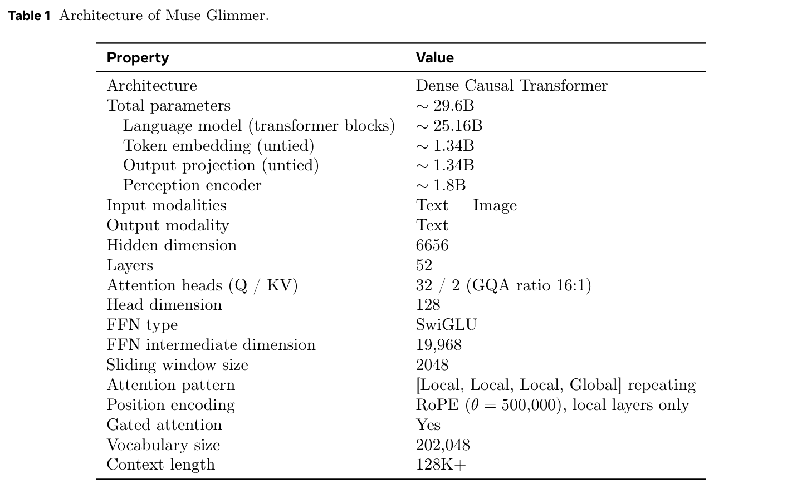
2.1 语言模型
语言骨干由 52 层 transformer 构成，隐藏维度为 6656，总计约 25.16B 参数（不包括 embedding 层和输出层）。我们在包含 202,048 个 token 的词表上使用不共享权重的输入与输出 embeddings，两者各有约 1.34B 参数（\(202{,}048\times6656\)）。
attention。每层使用分组查询 attention（GQA），包含 32 个 query head 和 2 个 key-value head（比例为 16:1），每个 head 的维度为 128。我们采用 2048 个 token 的滑动窗口，按三个局部 attention 层后接一个全局 attention 层的模式重复，在限制 KV cache 增长的同时保留长距离信息流。整个网络均采用 gated attention。旋转位置 embeddings（RoPE）的 \(\theta=500{,}000\)，仅应用于局部 attention 层；全局层依赖周围局部层累积的位置讯号，从而使模型具备可扩展性。
前馈网络。每层 FFN 使用 SwiGLU 激活（Shazeer, 2020），中间维度为 19,968。SwiGLU 使用三个权重矩阵：门控投影 \(W_1\in\mathbb{R}^{d\times d_{\mathrm{ff}}}\)、上投影 \(W_2\in\mathbb{R}^{d\times d_{\mathrm{ff}}}\) 和下投影 \(W_3\in\mathbb{R}^{d_{\mathrm{ff}}\times d}\)，有效扩展比例约为隐藏维度的 3 倍。
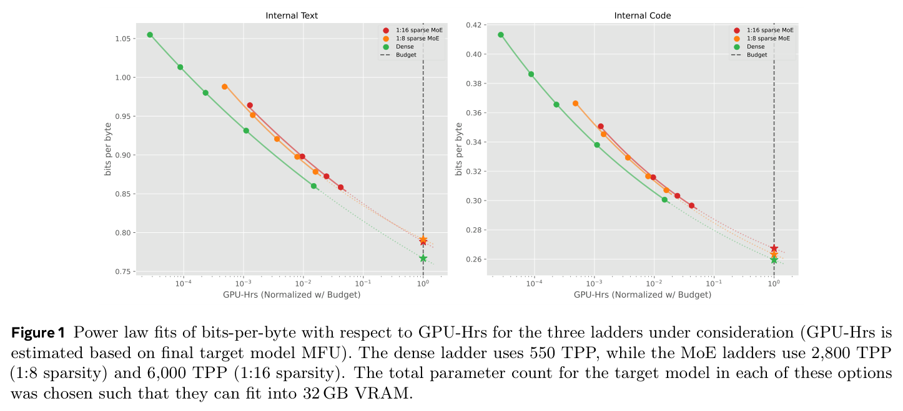
2.2 多模态输入与感知编码器
为支持交错的文本与图像输入，我们采用 Perception Encoder（Bolya et al., 2025），它使用 NaViT 风格（Dehghani et al., 2023）的视觉骨干。编码器是一个约 1.8B 参数的 ViT-G/14，具有 50 层、1536 的宽度和 14 的 patch 大小，利用 448 像素的参考网格，以原生分辨率处理图像。其输出 token 经由 \(2\times2\) pixel-shuffle 进行空间下采样，再通过一个两层 MLP 适配器，随后通过一个不带偏置的线性层和不含参数的 RMSNorm，投影到语言模型的 embedding 空间。
与依赖动态切块并配合缩略图／全局裁剪的方法（Cho et al., 2026; Liu et al., 2024b）不同，我们只进行一次保持宽高比的缩放，将图像调整到有效的 token 网格。在 \(2\times2\) 空间下采样后，一个输出视觉 token 对应一个 \(28\times28\) 像素单元，该单元来自 \(14\times14\) 的 ViT patch。因此，一张 \(448\times448\) 图像会产生 \(32\times32=1024\) 个原始 ViT patch，以及 \(16\times16=256\) 个输出视觉 token。对于更高分辨率的图像，我们会增大网格，最多每张图像输出 4096 个 token。
我们在整个训练过程中冻结感知编码器。虽然 Muse Glimmer 能够将视频作为帧序列输入，但它并未针对视频做专门优化。我们优化的是交错文本与图像的理解能力，包括多图像上下文。
2.3 面向端侧效率的设计
Muse Glimmer 的首要设计约束，是在严格的 32 GB 显存范围内可靠运行，这也是消费级硬件的实际容量上限。为确定这一硬件限制下的最优架构，我们通过训练一系列逐步放大规模的架构阶梯来评估候选配置，将稠密基线与两种具有不同路由稀疏性（1:8 和 1:16 激活专家）的 MoE 设计进行比较。我们保持推理时的总内存占用不变，使比较标准统一。在这一固定内存上限下，我们根据分配的训练 GPU 小时数与各配置估计的模型 FLOPs 利用率（MFU），估算目标的每参数 token 数（TPP）。在给定计算预算下，我们的所有架构阶梯都处于过度训练区间。scaling 曲线（图 1）表明，在训练计算量和参数规模约束下，稠密配置的计算效率是相应 MoE 配置的 2–2.5 倍。因此，我们选择了稠密的 30B 参数架构设计。
除静态参数权重之外，长程 agent 会话的内存占用主要取决于 KV cache 的大小（Gemma Team et al., 2026）。为缓解多步 agent 执行过程中的这一问题，Muse Glimmer 采用了滑动窗口 attention 等技术，限制长上下文中的 KV cache 增长，并使用分组查询 attention，使每层仅包含 2 个 KV head，其（下页续）
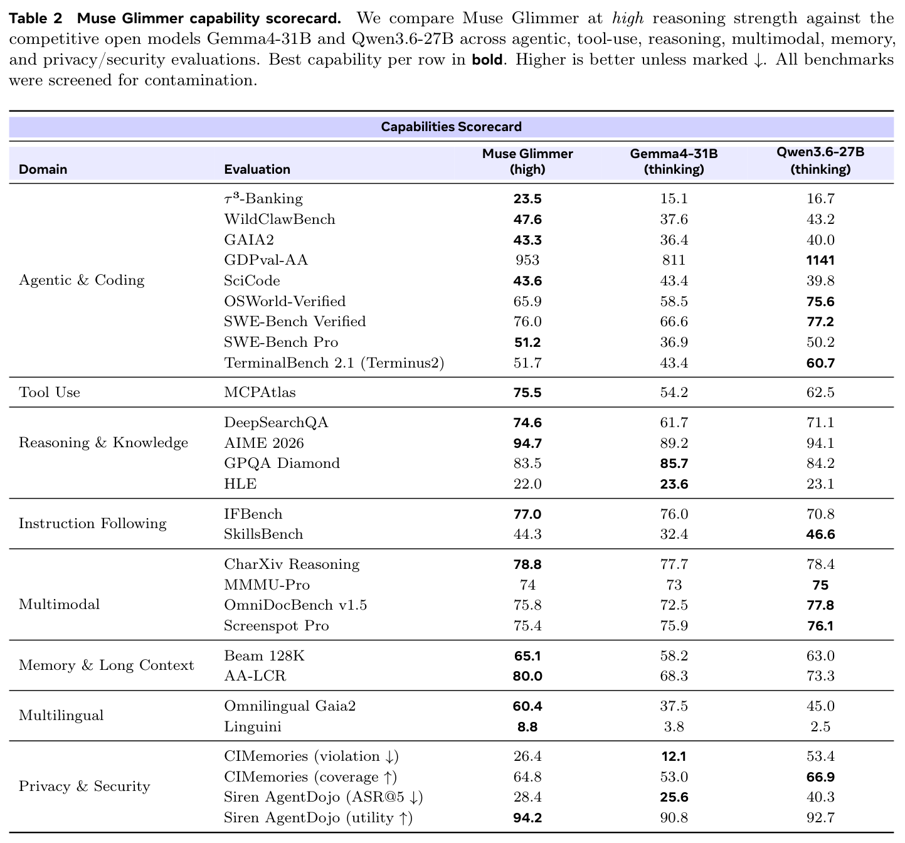
（接上页）head 维度为 128。为进一步压缩 KV cache，我们在全局层中评估了一种简化的多头潜在 attention（MLA）变体（Liu et al., 2024a），将 key 与 value 投影到单个联合向量中。我们测试了两种配置：一种匹配基线的 head 数量（将 KV cache 大小减半），另一种匹配基线的 KV 总占用（将 head 数量加倍）。两者在 RULER（Hsieh et al., 2024）等长上下文基准上均不及标准的分组查询 attention（GQA）（Ainslie et al., 2023），因此我们保留了 GQA。
3 模型评估
有效的自主 agent 行为需要多种能力。要在常用 scaffold 中操作、编写和调试代码，或处理多轮请求等 agent 任务中完成工作，模型需要在长程过程中连续推理，按照精确的 schema 调用工具，解释多模态观察结果（截图、图表、文档），并在不同会话之间保留状态。工具使用与函数调用充当执行接口，将推理转化为对环境的操作；指令遵循与可控性则决定模型能否遵循现实编排系统施加的复杂、组合式指令。长上下文记忆支撑了上述许多能力：即使 agent 展现出强大的推理能力，如果无法回忆先前轮次，也可能无法完成较复杂的多步任务。我们还评估了多语言（下页续）
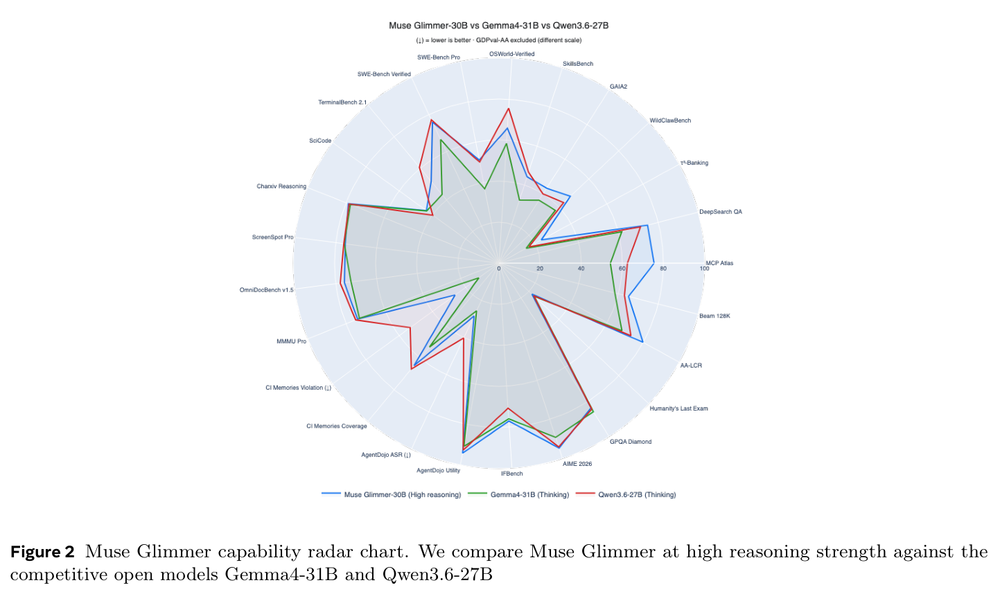
（接上页）agent 能力，以及涵盖多语言推理、阅读理解、知识和语言能力的多种非 agent 能力。模型结果见表 2 和图 2。基准说明与评估细节，包括哪些结果由内部运行、哪些由外部运行，见附录 A。
4 预训练
4.1 tokenizer
Muse Glimmer 使用 Llama 4（Meta AI, 2025）的字节对编码（BPE）tokenizer，总词表大小为 202,048 个 token，包括 200,000 个基础 token 和 2,048 个特殊 token。基础词表使用均衡的数据混合训练而成，其中代码占 35%、多语言文本占 35%、数学占 15%、英语占 15%，以优化不同领域的压缩效率。特殊 token 预算由各模态共享，在同一词表空间中统一文本、视觉、推理和 agent 能力。
4.2 预训练与中期训练阶段
训练分多个阶段进行：首先是预训练阶段，随后是两个中期训练阶段。每个阶段都有不同目的：预训练阶段通过从教师模型进行 logit 蒸馏来获取广泛的知识和推理能力；中期训练逐步引入领域专门能力，并扩展有效上下文长度。
预训练。基础模型通过从 Muse Spark 进行 logit 蒸馏来训练。我们采用协同蒸馏，在 Muse Spark 预训练期间记录其最高的 256 个 logits。此前的方法会持续混合软目标与硬目标（Meta AI, 2025），而我们的目标在预训练前 95% 的过程中只包含 KL 散度。在最后 5% 中，我们切换为仅针对真实目标使用交叉熵（CE）损失，以解决 Top-k logit 蒸馏固有的截断偏差（例如 Anshumann et al., 2025）。预训练数据由大规模、多样化的数据集合组成，覆盖网页文档、代码、数学、多语言文本和图像，知识截止日期为 2026-01-04。
checkpoint 平均。预训练结束时，我们通过 checkpoint 平均（“souping”）（Izmailov et al., 2018; Wortsman et al., 2022）生成中期训练的初始模型。近期研究证明了权重平均在 LLM 预训练中的有效性（Li et al., 2025b; Sanyal et al., 2023; Groeneveld et al., 2025）；沿用这一思路，我们在训练的最后 5% 中每 200 步保存一次 checkpoint（共 84 个），并搜索合并策略：均匀平均、加权移动平均（WMA）和指数移动平均（EMA），同时搜索 checkpoint 数量及其间隔。我们发现，相较更大的间隔，在较短窗口内合并（200 步间隔）始终效果更好；EMA 和 WMA 的结果比均匀平均略为稳定，不过不同合并类型的最优配置表现相近。最终选定的 souping 配方，是将最后一个 checkpoint 与此前三个相隔 600 步的 checkpoint 进行均匀平均。与单独使用最后一个 checkpoint 相比，这在所有困惑度评估上都带来一致提升，在更平滑的基准上（如 ML Papers、Multilingual Documents）增益更大。平均合并后的 checkpoint 用作中期训练阶段 1 的初始模型。
中期训练阶段 1：领域注入。阶段 1 从合并后的预训练 checkpoint 开始，引入有针对性的合成数据与领域专门数据，以改善后训练的起点。除自然数据（类似于预训练所用数据）外，该阶段的数据还包含合成数据，包括推理轨迹和结构化问题求解示范。此阶段使用的学习率低于预训练峰值学习率，以在合成数据目标上的收益与自然数据困惑度基准上可接受的退化之间取得平衡。
中期训练阶段 2：agent 能力。中期训练第二阶段将上下文窗口从 32K 扩展到 128K 个 token，并用 agent 推理数据增强模型。此阶段我们使用交叉熵损失，因为长上下文和 agent 数据引入的分布变化，使教师模型的 logits 在此阶段不再那么可靠。与中期训练第一阶段相比，此阶段的数据混合额外包含工具使用与 agent 轨迹数据，以及合成流程专门生成的 agent 示范（第 6.2 节）。本阶段的学习率设置为低于预训练峰值学习率。
5 后训练
后训练通过下文所述的一系列监督微调（SFT）、强化学习（RL）和 on-policy 蒸馏阶段，将蒸馏后的基础模型转化为经过对齐的 agent。
- SFT。使基础 checkpoint 对齐监督目标：任务格式、指令遵循和推理风格。
- on-policy 蒸馏。我们采用 Agarwal et al.（2024b）的 on-policy 蒸馏方法，由学生模型生成 rollout，教师模型根据学生访问过的前缀提供逐 token 的分布目标。
- 多目标 RL。针对奖励模型、验证器和任务成功信号进行优化：推理、agent 能力、基于人类反馈的强化学习（RLHF）。
5.1 监督微调（SFT）
我们使用监督微调（SFT）配方。此阶段将中期训练中获得的能力扩展到通用指令遵循场景。它混合使用合成数据与人工生成的数据，覆盖推理、编程、数学、通用指令遵循，以及工具使用、多步任务执行等 agent scaffold（第 6.2 节）。我们在每个数据集上训练约一个 epoch，优先重视响应格式、数据质量和覆盖面，避免反复接触相同数据，以保持熵。
5.2 rollout 提取
我们从 Muse Spark 收集教师轨迹，重点关注多个不同 RL 和 RLHF 训练运行中的推理、agent 和工具使用能力。对于每个来源运行，我们选择一系列训练 checkpoint，保留奖励高于阈值的轨迹。我们优先使用较后期 checkpoint 生成的轨迹，因为它们体现了更成熟的教师策略。对于重复的（下页续）
（接上页）任务和提示词，如果它们出现在不同 checkpoint，或生成了不同的轨迹，我们仍予以保留。每条轨迹都转换为通用的对话训练格式，其中包含系统上下文、用户消息、助手推理、工具交互和最终响应。该转换保留了复现教师行为所需的模型与环境交互序列，同时移除了模型不可见的运行元数据。
过滤与质量控制。提取出的轨迹经过大量清洗和过滤，以确保教师 rollout 的高质量。我们去除了评估元数据（如奖励、评分器输出）、偶尔出现的提示词复述，以及不受支持的工具接口或采集基础设施产生的残留内容。凡是提及并暴露教师模型身份的轨迹均被排除，以免将非预期的身份行为传递给学生模型。随后，我们依据训练对话 schema 和模型输入渲染器验证每个样本，剔除格式错误的消息序列、无效的工具调用结构、不受支持的字段，以及无法渲染为目标 token 序列的样例。
5.3 on-policy 蒸馏与强化学习
在后训练的较后阶段，我们利用 on-policy 蒸馏，让 Muse Glimmer 从更大的 Muse Spark 模型学习（Kim and Rush, 2016; Gu et al., 2024; Agarwal et al., 2024a），并结合强化学习。在 on-policy 蒸馏期间，正在训练的学生模型 Muse Glimmer 主动采样 rollout。当学生生成这些自回归轨迹时，教师会逐步评估学生的生成分布，产生细粒度反馈信号。这一设置通过在模型自身的输出分布上训练，解决训练与推理之间的分布偏移，教会模型在生成路径偏离时恢复。我们发现，相比直接从 SFT 进入 RL，这一中间阶段能够持续改善下游 RL 的结果。
5.4 推理模式
Muse Glimmer 支持不同的推理强度。我们在 RL 期间训练这一能力，将每个提示词的样本划分为多个子组，并对每个子组施加与其指定推理强度对应的长度惩罚。由于更多思考会带来更高性能，这种做法可能降低模型能力。我们发现，纳入完整的强度范围不会损害较高推理强度下的性能，实际上还对其 chain-of-thought 长度产生了有益的正则化作用。另一方面，全范围训练确实会减少每一步中较高强度样本的接触量；能力主要由这些样本推动获取，随后再传播到较低强度。因此，在性能与步数之间进行权衡后，我们采用一种路由方案：一定比例的提示词仅路由到较高强度，其余则使用完整强度范围。
推理时，Muse Glimmer 通过系统提示词中指定的推理强度参数，支持可配置的推理深度。共定义四个级别：low，为简单事实查询触发最少的内部思考；medium，为需要一定规划的任务分配适中的思考预算；high，为调试或研究等复杂多步问题启用完整的 chain-of-thought 推理；以及实现最大能力的 xhigh。推理强度以单条指令（Reasoning strength: <level>）的形式追加到系统提示词中，使部署时无需重新训练即可控制延迟与推理质量之间的权衡。high 是 agent 任务的默认推理强度，因为此类任务要求模型规划工具使用序列、解释中间结果，并在必要时回溯。
5.5 可信的本地 agent 工作流程
我们通过 SFT 和 RL，使 Muse Glimmer 能更好地支持可信的本地 agent 工作流程。
恰当的信息流。Muse Glimmer 经过训练，以便在代表个人与第三方交互时，更好地尊重信息隐私。这一隐私概念的底层原则受到情境完整性（CI）理论（Nissenbaum, 2004）的启发。这里，信息隐私取决于信息交换所处的情境，即信息的发送者／接收者、所涉及的数据类型，以及支配交换过程的传输原则。我们首先在 SFT 阶段，通过 Muse Spark 生成的合成轨迹，引入对信息交换情境进行推理的能力（下页续）
（接上页）例如撰写电子邮件或 WhatsApp 消息时。这些轨迹呈现了一个复杂人际网络中的交互（见第 6.2 节）；在使用 Muse Spark 生成轨迹时，我们通过精心编写的系统提示词指令诱导所需行为（也称提示词蒸馏，Snell et al., 2022; Askell et al., 2021），并在训练前从最终轨迹中移除这些指令。即使有系统提示词指令，如果 Muse Spark 仍然（a）包含不必要的信息、（b）未包含必要的信息，或（c）未完成当前任务，我们也会丢弃相应轨迹。我们的轨迹既覆盖较简单的非 agent 单轮场景，也覆盖模拟个人助手环境中更复杂的多轮工具使用场景。最后，我们在 RL 期间惩罚过度分享，同时奖励正确分享必要信息，从而强化这一行为。
通过对抗鲁棒性与有原则的拒绝实现安全。作为在工具介导的环境中运行的 agent 助手，Muse Glimmer 必须在抵御对抗性操纵的同时，保持完成正当任务的能力。我们训练 Muse Glimmer 展现相互补充的安全行为，例如抵御隐藏在工具返回数据中的间接提示词注入、拒绝有害或违反策略的请求，以及遵守决定如何解决指令冲突的主体层级。我们利用第 6.2 节的合成数据生成流程，通过 Muse Spark 生成 agent 安全轨迹，在考虑行为准则的规则体系下使用拒绝采样，确保 agent 正确忽略对抗内容、在完成安全子任务的同时拒绝不安全子任务，并提供防御性替代方案。如果 agent（a）屈从于对抗指令、（b）过度拒绝正当任务，或（c）未完成良性目标，我们就丢弃该轨迹。安全轨迹覆盖多种领域，既有较简单的单轮场景，也有复杂的多轮工具使用场景。RL 期间，我们进一步强化鲁棒性：对 agent 执行攻击者植入操作的轨迹施加确定性惩罚，同时奖励成功完成任务，以及在模型的 chain-of-thought 推理中明确识别不可信内容。
6 数据
6.1 预训练数据
我们的预训练数据集是一个大规模、多样化的集合，涵盖广泛领域和模态，包括网页文档、代码、STEM 内容、多语言文本和图像。我们结合基于规则的启发式方法、基于分类器的质量评分和大力度去重，对各领域进行过滤。此外，我们还针对基准与评估集对语料进行去污染，以尽量减少训练集与测试集的重叠。知识截止日期为 2026-01-04。支持的语言列表见 B.6。
6.2 合成数据
将 LLM 训练为有效使用工具的 agent，需要能够展现复杂推理、隐私意识以及熟练工具选择与执行的高保真轨迹。考虑到收集真实世界数据面临的可扩展性与资源挑战，我们使用一套流程生成合成的监督微调数据。该流程使用持续运行的 AI agent 执行框架，在 Docker 容器内运行模拟环境，模拟常用电子邮件服务、日历、文档、WhatsApp、代码仓库管理工具和其他常见 CLI 工具等应用，同时能够访问真实网络。
我们遵循 Agents Research Environments（Froger et al., 2025）确立的设计原则。该设计将一个“世界”（universe）视为预先填充的数字生活：一个人物设定由包含 10–14 位联系人的关系网络支撑，具有数周的通信、日历事件、文档和消息历史。通过将这些人物设定整合到模拟环境中，我们得到连贯的数字生活，确保 agent 并不知道其交互是模拟的。agent 可访问的工具采用与真实对应工具相同的参数结构和 JSON 返回格式。1
1 例如，当 agent 执行 gh issue list –label critical 这样的查询时，模拟环境会返回由合成世界定义导出的匹配 issue。类似地，wacli send –to "Alice" –message "status update?" 等命令会触发 LLM，根据人物档案生成符合上下文的响应。
合成数据框架支持复杂对话，可对用户与环境的响应建模，利用时间跳转表示持续较长时间（多天）的场景，支持多种记忆（原生记忆、记忆 embeddings、CLI 工具）及其他功能。
人物设定。我们首先生成多样化的人物设定，以模拟潜在的 agent 用户。每个人物设定从采样得到的人口统计属性和大五人格属性（McCrae and John, 1992）（年龄、地区和特质分数）开始，模型将其扩展为完整档案，包括职业、爱好和习惯。为获得超越基于温度采样的多样性，我们还让部分档案以随机采样的文本为依据，提示模型生成一个与文本作者合理匹配的人物设定；这一方法与从真实文本推导人物设定、近似总体层面特质分布的研究（Hu et al., 2025）相关。人物设定以 batch 生成，并组织成关系图，为跨电子邮件、消息和日历平台的交互提供依据。更多细节见附录 B.3。
世界。对每个人物设定，我们将完整的一套模拟工具状态实际生成出来，并封装到专用目录中。流程选择符合现实的一组应用，按照依赖顺序填充内容，确保后续内容——例如引用特定联系人的邮件，或涉及已建立参与者的日历事件——始终以此前状态为依据。最后，流程生成所有必要的工作区文件和记忆条目。
场景。建立一个世界后，我们分两个阶段生成任务序列。首先，给定简洁的世界摘要（联系人、近期通信、文档历史），模型提出涵盖执行、搜索、适应性和时间管理等类别的高层目标；目标仅限于实际存在的工具和联系人，以避免虚构不可用的资源。其次，将这些目标扩展为可运行的场景：把任务重写为自然的用户交互，并按需规划任何缺失的准备内容（如邮件会话或日历邀请）。最后，生成可验证的评分细则，以评估 agent 表现。
后处理。我们采用严格的后处理流程来确保数据集质量：
- 确定性质量过滤：移除不符合基本标准的轨迹，例如 agent 未完成目标、重复条目、文本不连贯，或“打破第四面墙”的轨迹。
- 不期望行为屏蔽：即使 agent 实现了规定目标，我们仍有意禁用对轨迹中任何被判定为“不期望”的部分的训练。这包括错误的工具调用、错误的记忆搜索查询及其他情况。
- 依据验证：我们使用事后评判流程，基于依据检查进行严格过滤。任何出现幻觉、虚假成功或未经验证结果的轨迹，都会从最终数据集中移除。
7 推理优化
我们的推理重点是各种边缘设备上的小 batch 场景，因此主要讨论：仅权重量化，以减少权重的内存占用和 decoding 期间的数据传输；以及用于 speculative decoding 的 DFlash 草稿模型的训练与部署。
7.1 量化
Muse Glimmer 的 BF16 权重占用 55.7 GB。我们的目标是在 24 或 32 GB 内存设备上部署，同时为未量化的 KV cache、草稿模型和感知编码器预留容量。因此，我们将语言模型权重大小的目标设为低于 20 GB。我们使用留出文本与代码数据上，相对 BF16 的负对数似然变化（记为 \(\Delta\mathrm{NLL}\)）来比较后训练量化（PTQ）变体。我们利用 \(\Delta\mathrm{NLL}\) 选择候选方案，进行下游推理与 agent 评估。
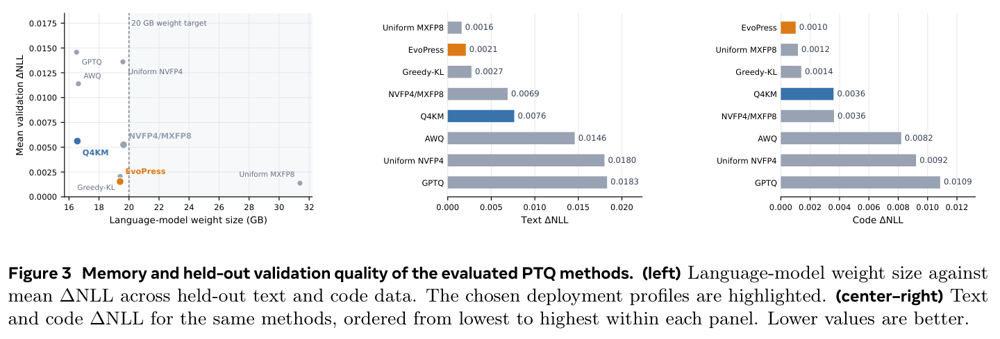
静态逐张量分配。我们从 llama.cpp2 中常用的 Q4_K_M 配置开始，该配置在部分层中将 Value、FFN-down 和 Output 投影提升到更高精度。为采取更保守的方案，我们在所有层中应用这种精度提升，并测试 llama.cpp 的 K-quant 之外的不同精度格式。
这些格式包括 GPTQ（Frantar et al., 2023）和 AWQ（Lin et al., 2024），其中较低精度张量使用 INT4，提升精度后的张量使用 INT6，组大小均为 128。我们也将相同的张量分配应用于浮点格式：较低精度张量使用每块 16 个权重的 NVFP4，提升精度后的张量使用每块 32 个权重的 MXFP8（Abecassis et al., 2025; Rouhani et al., 2023）。我们使用自行改造为仅权重版本的 NVIDIA TensorRT Model Optimizer 中的 AWQ-Lite（NVIDIA Corporation, 2024–2026）来校准这一分配。校准利用激活统计量，选择相邻投影之间的重缩放因子。我们先将这些因子合并进 BF16 权重，再将每个权重一次性转换为目标格式，同时保持激活为 BF16。最后，我们加入全 NVFP4 和全 MXFP8 变体作为参照。
对于 Q4KM 变体，我们与 llama.cpp 一致，仅在部分层中提升精度。相比原方案，我们做了两项修改：输出投影使用 Q5_K 而非 Q6_K；Q6_K 张量和 Q5_K 输出投影都使用更大的组大小 128，而原先 Q6_K 为 16、Q5_K 为 32。更大的组既能避开 MLX 中组大小为 16 的限制，也能在将 K-quant 权重转换为我们在 ExecuTorch3 中的 MLX 实现所使用的仿射表示时，减少缩放因子的开销。这两项修改带来的质量下降都可以忽略。
动态分配。我们还测试校准测量能否支持比静态 Q4KM 方案更灵活的分配。受 Unsloth Dynamic 2.04 逐张量分配的启发，我们提出 Greedy-KL：从 Q6_K 开始，根据每节省一个字节所引起的校准 KL 散度增加量，降低张量精度。它将剩余容量用于把最敏感的 Q4_K 张量提升至 Q5_K。作为比较，我们将混合精度量化的进化方法 EvoPress（Sieberling et al., 2025）改造为使用相同的 Q4_K、Q5_K 和 Q6_K 搜索空间。EvoPress 在内存约束下演化精度分配，以相对 BF16 的 KL 散度作为搜索目标。
两种搜索都将融合 attention 投影中的 query、key、value 和输出门控切片独立暴露出来。FFN 的门控与上投影也分别独立暴露。连同 attention 输出、FFN-down、token embedding 和输出投影，共有 418 个权重单元。任何张量角色都不固定为高精度。获胜的 EvoPress 配置分别将 51、130 和 237 个单元分配为 Q4_K、Q5_K 和 Q6_K，组大小均为 32。搜索为 token embedding 选择 Q4_K，为输出投影选择 Q5_K，模型权重总计 19.65 GB。
2 https://github.com/ggml-org/llama.cpp/blob/23e0d70bacaaca1429d365a44aa9e7434f17823b/src/llama.cppv#L5188
3 https://pytorch.org/blog/fast-ondevice-agentic-ai-with-executorch/
4 https://huggingface.co/unsloth/gemma-4-31B-it-GGUF
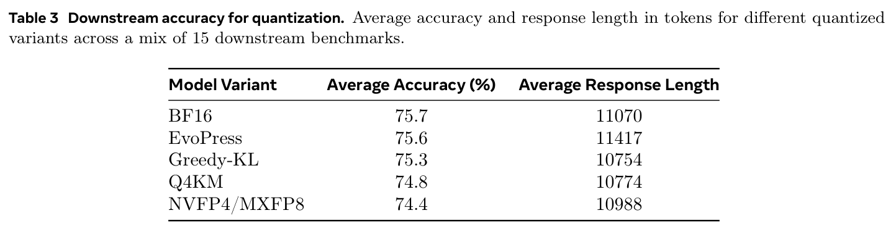
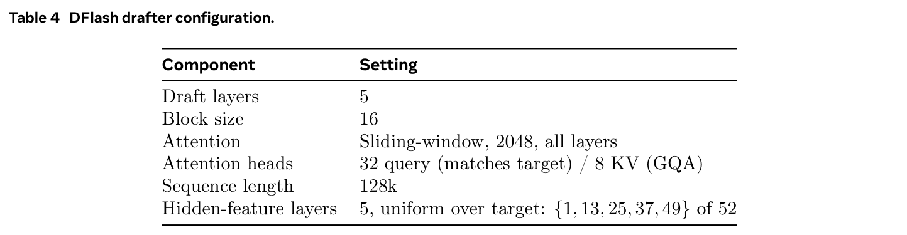
结果。图 3 总结了内存与验证质量之间的权衡。EvoPress 提供最低的验证损失，而 Q4KM 的内存占用最小，因此我们分别选择这两种变体用于 32 GB 和 24 GB 显存部署。
agent 与推理评估。我们在 15 项下游任务上评估候选方案，以便与基于 NLL 的结果比较。表 3 展示了结果。我们看到，\(\Delta\mathrm{NLL}\) 与所有任务综合的平均准确率有相当良好的一致性。相关研究表明，激进的低位宽量化可能增加 chain-of-thought 长度及其相关推理成本（Liu et al., 2025; Lotfi et al., 2026）。然而，由于我们选取的量化方案较为保守，相较 BF16，未观察到 chain-of-thought 长度的显著变化。
7.2 speculative decoding
我们采用 DFlash（Chen et al., 2026）作为 speculative decoding 策略，与当前开源领先标准保持一致。我们的草稿模型是一个轻量的分块扩散模型（Arriola et al., 2025），在一次前向传播中预测一整块边缘概率，再独立采样，构建草稿块。表 4 总结了我们的 DFlash 配置。
我们将 SFT 和 RL 提示词合并为一个池，利用目标模型在这些提示词上生成的 on-policy rollout，以监督方式离线训练 DFlash 草稿模型。训练时，以响应 token 的 1/16 比率采样被掩码块的起始锚点，并使用 D-PACE（动态位置感知交叉熵）目标优化模型（Wu et al., 2026）。
8 可信性考量
我们结合多种训练时缓解措施，将其融入模型权重，以应对灾难性风险评估、内容安全、agent 特有风险及其他可信性问题。
8.1 安全与隐私策略
Muse Glimmer 在三个风险维度上接受评估并实施缓解措施：内容安全；agent 风险（关于不可逆操作确认、数据最小化、尊重 scaffold 边界以及抵御间接提示词注入的策略，通过专门训练数据落实）；以及灾难性风险（化学、生物、网络（下页续）
（接上页）和失控评估）。为此，我们同时使用融入权重的训练时对齐，以及轻量的推理时安全机制。
8.2 训练时缓解措施
Muse Glimmer 的安全行为通过三个后训练阶段建立：
- 安全 SFT。监督微调数据混合中纳入了经过整理、展示正确安全行为的样例，包括拒绝有害请求、对边界性提示词作出恰当回应，以及正确处理 agent 安全场景。我们复用成熟的对齐配方，同时加入 Muse Glimmer 专有的 agent 安全数据，覆盖工具使用边界、抵御提示词注入和权限处理。
- 安全 RL。强化学习阶段引入安全专用奖励信号，惩罚违反策略的行为，同时奖励对正当请求作出有帮助、非拒绝式的响应。此阶段通过迭代 checkpoint 评估与缓解，持续提升内容安全评估表现。
- 恰当的信息流。如第 5.5 节所述，通过专门的合成训练数据，将数据敏感性识别、最小化以及本地优先执行等原则直接融入模型权重，提供超越单靠系统提示词所能实现的纵深防御。
9 相关工作
端侧小语言模型。一批紧凑且公开发布的模型系列，使得能力出色的语言模型能够直接在消费级硬件上运行。Llama 模型系列（Touvron et al., 2023a,b; Grattafiori et al., 2024）展现出相较前沿模型的良好性能，同时催生了庞大的开源生态，涵盖微调模型、量化工具和本地推理引擎（llama.cpp、Ollama、LM Studio）。该生态建立了 GGUF 量化格式、speculative decoding 支持、Apple Silicon 优化等实用基础设施，Muse Glimmer 等模型如今依靠这些设施在消费级设备上部署。
Microsoft 的 Phi-4（Abdin et al., 2024）是一个 14B 参数模型，主要使用经过整理的合成数据训练。Google DeepMind 近期发布的 Gemma 4（Gemma Team et al., 2026）涵盖从 2.3B 到 31B 参数的稠密模型（以及一个 MoE 变体），依靠量化感知训练和 KV cache 优化来满足严格的内存与延迟预算。最后，Qwen3（Qwen Team, 2025）系列提供从 0.6B 到 235B 参数的稠密与 MoE 模型，在单个模型内统一快速（非思考）和深思（思考）推理，并将多语言覆盖扩展到 119 种语言。这些模型系列界定了小型 LLM 的格局，也是我们定位 30B 模型的参照。
教师–学生蒸馏。将大型教师模型的能力蒸馏到较小且可部署的学生模型中，已成为构建能力出色的紧凑模型的主流范式。DeepSeek-R1（Guo et al., 2025）证明，仅凭强化学习就能在大型模型中激发复杂的 chain-of-thought 推理，而所得推理轨迹随后可蒸馏到小得多的学生模型（1.5B–70B 参数），使其显著优于同规模从零训练的模型。Qwen3 系列（Qwen Team, 2025）通过从强到弱的 on-policy 蒸馏扩展这一思路：学生生成自己的 rollout，并从更大的教师模型获得密集的 token 级 KL 监督，效果优于仅模仿教师生成输出的 off-policy 蒸馏。同期的 Self-Distilled Reasoner（Zhao et al., 2025）和 AsyncOPD（Kang et al., 2025）进一步探索 on-policy 蒸馏的效率前沿，表明学生生成的数据配合教师反馈，比传统监督微调具有更高的样本效率。我们的后训练配方（第 5.3 节）采用来自 Muse Spark 教师的 on-policy 蒸馏；对于目标模型规模，我们发现该方法优于仅使用强化学习的配方。
agent LLM 框架。ReAct 范式（Yao et al., 2023）确立了交错的推理与行动循环，为大多数现代 LLM agent 架构奠定基础，表明语言模型可以有效衔接语言推理与工具调用，以解决多步任务。后续工作集中于（下页续）
（接上页）通过训练使模型可靠地使用工具，而非仅依赖提示。Toolformer（Schick et al., 2024）在预训练期间引入自监督的 API 调用插入；Gorilla（Patil et al., 2023）则表明，在大规模 API 文档上微调，即使 API 不断演化，也能使模型高保真地生成正确函数调用。FireAct（Chen et al., 2023）和 Agent-FLAN（Chen et al., 2024）证明，在多步 agent 轨迹上微调，能使模型在交互环境中显著优于基于提示词的基线。在部署方面，OpenClaw（OpenClaw Contributors, 2025）等开源编排框架推动了本地托管 agent 的普及，这些 agent 在消费级硬件上将模型推理与工具执行串联起来，带来了对紧凑模型的需求：它们需要能在长会话中持续进行可靠的连续工具调用。SWE-agent（Yang et al., 2024）和 OpenHands（Wang et al., 2024a）等编程 agent 表明，软件工程中的 agent 工具使用需要持续的多步规划和故障恢复；这正是我们的模型通过 agent 对齐训练（第 6.2 节）所针对的能力。
10 结论
本技术报告介绍了 Muse Glimmer，一个专为消费级硬件上的自主 agent 操作构建的 30B 稠密模型。通过从 Muse Spark 进行有针对性的蒸馏，它在 agent 基准上超越了同规模开放模型。结合 4 位量化和通过 DFlash 预测头实现的 speculative decoding，Muse Glimmer 能够在单张 RTX 5090 上以实用速度运行，且质量损失极小。对截图、文档和图表的多模态理解，使模型能原生地在 agent 环境和信息丰富的环境中操作。Muse Glimmer 覆盖一百多种语言变体，并在多语言 agent 评估中领先于同规模开放模型。
所有产物，包括模型权重和 speculative decoding 预测头，均以 Apache 2.0 许可证发布。
11 作者名单
11.1 核心贡献者
11.2 贡献者
参考文献
Marah Abdin, Jyoti Aneja, Harkirat Behl, Sébastien Bubeck, Ronen Eldan, Suriya Gunasekar, Michael Harrison, Russell J Hewett, Mojan Javaheripi, Piero Kauffmann, 等。 Phi-4 技术报告. arXiv 预印本 arXiv:2412.08905, 2024.
Felix Abecassis, Anjulie Agrusa, Dong Ahn, Jonah Alben, Stefania Alborghetti, Michael Andersch, Sivakumar Arayandi, Alexis Bjorlin, Aaron Blakeman, Evan Briones, 等。 使用 NVFP4 预训练大语言模型. arXiv 预印本 arXiv:2509.25149, 2025.
Rishabh Agarwal, Nino Vieillard, Yongchao Zhou, Piotr Stanczyk, Sabela Ramos Garea, Matthieu Geist, and Olivier Bachem. 语言模型的 on-policy 蒸馏：从自行生成的错误中学习. In 国际学习表征会议, 卷 2024, 页 21246–21263, 2024a.
Rishabh Agarwal, Nino Vieillard, Yongchao Zhou, Piotr Stanczyk, Sabela Ramos Garea, Matthieu Geist, and Olivier Bachem. 语言模型的 on-policy 蒸馏：从自行生成的错误中学习. In 国际学习表征会议, 卷 2024, 页 21246–21263, 2024b.
Joshua Ainslie, James Lee-Thorp, Michiel De Jong, Yury Zemlyanskiy, Federico Lebrón, and Sumit Sanghai. GQA：从 multi-head checkpoint 训练广义多查询 transformer 模型. In 2023 年自然语言处理实证方法会议论文集, 页 4895–4901, 2023.
Pierre Andrews, Mikel Artetxe, Mariano Coria Meglioli, Marta R. Costa-jussà, Joe Chuang, David Dale, Mark Duppenthaler, Nathanial Paul Ekberg, Cynthia Gao, Daniel Edward Licht, Jean Maillard, Alexandre Mourachko, Christophe Ropers, Safiyyah Saleem, Eduardo Sánchez, Ioannis Tsiamas, Arina Turkatenko, Albert Ventayol-Boada, and Shireen Yates. BOUQuET：面向翻译通用质量评估的数据集、基准与开放倡议. In Christos Christodoulopoulos, Tanmoy Chakraborty, Carolyn Rose, and Violet Peng, 编， 2025 年自然语言处理实证方法会议论文集, 页 27515–27535, Suzhou, China, 11 月 2025. 计算语言学协会. ISBN 979-8-89176-332-6. doi: 10.18653/v1/2025.emnlp-main.1400. https://aclanthology.org/2025.emnlp-main.1400/.
Anshumann, Mohd Abbas Zaidi, Akhil Kedia, Jinwoo Ahn, Taehwak Kwon, Kangwook Lee, Haejun Lee, and Joohyung Lee. 稀疏 logit 采样：加速 LLM 中的知识蒸馏, 2025. https://arxiv.org/abs/2503.16870.
Marianne Arriola, Aaron Gokaslan, Justin T. Chiu, Zhihan Yang, Zhixuan Qi, Jiaqi Han, Subham Sekhar Sahoo, and Volodymyr Kuleshov. 分块扩散：在自回归语言模型与扩散语言模型之间插值, 2025. https://arxiv.org/abs/2503.09573.
Amanda Askell, Yuntao Bai, Anna Chen, Dawn Drain, Deep Ganguli, Tom Henighan, Andy Jones, Nicholas Joseph, Ben Mann, Nova DasSarma, Nelson Elhage, Zac Hatfield-Dodds, Danny Hernandez, Jackson Kernion, Kamal Ndousse, Catherine Olsson, Dario Amodei, Tom Brown, Jack Clark, Sam McCandlish, Chris Olah, and Jared Kaplan. 作为对齐实验室的通用语言助手. arXiv 预印本 arXiv:2112.00861, 2021.
Lucas Bandarkar, Davis Liang, Benjamin Muller, Mikel Artetxe, Satya Narayan Shukla, Donald Husa, Naman Goyal, Abhinandan Krishnan, Luke Zettlemoyer, and Madian Khabsa. Belebele 基准：一个涵盖 122 种语言变体的平行阅读理解数据集. In Lun-Wei Ku, Andre Martins, and Vivek Srikumar, 编， 计算语言学协会第 62 届年会论文集（第 1 卷：长论文）, 页 749–775, Bangkok, Thailand, 8 月 2024. 计算语言学协会. doi: 10.18653/v1/2024.acl-long.44. https://aclanthology.org/2024.acl-long.44/.
Chaithanya Bandi, Razvan-Gabriel Dumitru, Ben Hertzberg, Divyansh Agarwal, Geobio Boo, Tejas Polakam, Sami Hassaan, Jeff Da, HiJae Kim, Vipul Gupta, 等。 MCP-Atlas：基于真实 MCP 服务器的大规模工具使用能力基准. arXiv 预印本 arXiv:2602.00933, 2026.
Daniel Bolya, Po-Yao Huang, Peize Sun, Jang Hyun Cho, Andrea Madotto, Chen Wei, Tengyu Ma, Jiale Zhi, Jathushan Rajasegaran, Hanoona Rasheed, Junke Wang, Marco Monteiro, Hu Xu, Shiyu Dong, Nikhila Ravi, Daniel Li, Piotr Dollár, and Christoph Feichtenhofer. Perception Encoder：最佳视觉 embeddings 并不位于网络输出端. In 《神经信息处理系统进展》, 卷 38, 2025.
Andrea Caciolai, Pere-Lluís Huguet Cabot, Chierh Cheng, Albert Ventayol-Boada, Gabriel Mejia Gonzalez, Christophe Ropers, Lucas Bandarkar, Sebastian Ruder, Darlene Sakakihara, Elliot Yun, Pierre Andrews, Grégoire Mialon, Romain Froger, and Marta R. Costa-jussà. OmnilingualGAIA2：评估前沿 AI agent 的多语言差距, 2026. https://arxiv.org/abs/2608.08775.
参考文献（续）
Center for AI Safety, Scale AI, and HLE Contributors Consortium. 用于评估 AI 能力的专家级学术问题基准. Nature, 649:1139–1146, 2026. doi: 10.1038/s41586-025-09962-4. https://arxiv.org/abs/2501.14249.
Baian Chen, Chang Shu, Ehsan Shareghi, Nigel Collier, Karthik Narasimhan, and Shunyu Yao. FireAct：迈向语言 agent 微调. arXiv 预印本 arXiv:2310.05915, 2023.
Jian Chen, Yesheng Liang, and Zhijian Liu. DFlash：用于极速 speculative decoding 的分块扩散, 2026. https://arxiv.org/abs/2602.06036.
Zehui Chen, Kuikun Du, Wenquan Chen, Yining Liu, Zhengkai Yang, Zhiyuan Liu, and Maosong Sun. Agent-FLAN：为大语言模型的有效 agent 微调设计数据与方法. arXiv 预印本 arXiv:2403.12881, 2024.
Jang Hyun Cho, Andrea Madotto, Effrosyni Mavroudi, Triantafyllos Afouras, Tushar Nagarajan, Muhammad Maaz, Yale Song, Tengyu Ma, Shuming Hu, Suyog Jain, 等。 PerceptionLM：用于细致视觉理解的开放访问数据与模型. 《神经信息处理系统进展》, 38:23475–23537, 2026.
François Chollet. 论智能的度量. arXiv 预印本 arXiv:1911.01547, 2019.
Edoardo De Benedetti, Nicholas Carlini, and Florian Tramèr. AgentDojo：用于评估 LLM agent 提示词注入攻击与防御的动态环境. arXiv 预印本 arXiv:2406.13352, 2024.
Mostafa Dehghani, Basil Mustafa, Josip Djolonga, Jonathan Heek, Matthias Minderer, Mathilde Caron, Andreas Steiner, Joan Puigcerver, Robert Geirhos, Ibrahim Alabdulmohsin, Avital Oliver, Piotr Padlewski, Alexey Gritsenko, Mario Lučić, and Neil Houlsby. Patch n’ Pack：NaViT，适用于任意宽高比和分辨率的视觉 transformer. In 《神经信息处理系统进展》, 卷 36, 页 2252–2274, 2023.
Jasper Dekoninck, Nikola Jovanović, Tim Gehrunger, Kári Rögnvaldsson, Ivo Petrov, Chenhao Sun, and Martin Vechev. 超越基准：将 MathArena 用作 LLM 数学能力的评估平台. 2026. https://arxiv.org/abs/2605.00674.
Daniel Deutsch, Eleftheria Briakou, Isaac Rayburn Caswell, Mara Finkelstein, Rebecca Galor, Juraj Juraska, Geza Kovacs, Alison Lui, Ricardo Rei, Jason Riesa, Shruti Rijhwani, Parker Riley, Elizabeth Salesky, Firas Trabelsi, Stephanie Winkler, Biao Zhang, and Markus Freitag. WMT24++：将 WMT24 的语言覆盖扩展至 55 种语言与方言. In Wanxiang Che, Joyce Nabende, Ekaterina Shutova, and Mohammad Taher Pilehvar, 编， 计算语言学协会研究成果集：ACL 2025, 页 12257–12284, Vienna, Austria, 7 月 2025. 计算语言学协会. ISBN 979-8-89176-256-5. doi: 10.18653/v1/2025.findings-acl.634. https://aclanthology.org/2025.findings-acl.634/.
Shuangrui Ding, Xuanlang Dai, Long Xing, Shengyuan Ding, Ziyu Liu, Yang JingYi, Penghui Yang, Zhixiong Zhang, Xilin Wei, Xinyu Fang, Yubo Ma, Haodong Duan, Jing Shao, Jiaqi Wang, Dahua Lin, Kai Chen, and Yuhang Zang. WildClawBench：用于真实世界长程 agent 评估的基准, 2026. https://arxiv.org/abs/2605.10912.
Elias Frantar, Saleh Ashkboos, Torsten Hoefler, and Dan Alistarh. GPTQ：生成式预训练 transformer 的精确后训练量化. arXiv 预印本 arXiv:2210.17323, 2023.
Romain Froger, Pierre Andrews, Matteo Bettini, Amar Budhiraja, Ricardo Silveira Cabral, Virginie Do, Emilien Garreau, Jean-Baptiste Gaya, Hugo Laurençon, Maxime Lecanu, Kunal Malkan, Dheeraj Mekala, Pierre Ménard, Gerard Moreno-Torres Bertran, Ulyana Piterbarg, Mikhail Plekhanov, Mathieu Rita, Andrey Rusakov, Vladislav Vorotilov, Mengjue Wang, Ian Yu, Amine Benhalloum, Grégoire Mialon, and Thomas Scialom. ARE：扩展 agent 环境与评估规模. arXiv 预印本 arXiv:2509.17158, 2025. https://arxiv.org/abs/2509.17158.
Romain Froger, Pierre Andrews, Matteo Bettini, Amar Budhiraja, Ricardo Silveira Cabral, Virginie Do, Emilien Garreau, Jean-Baptiste Gaya, Hugo Laurençon, Maxime Lecanu, Kunal Malkan, Dheeraj Mekala, Pierre Ménard, Gerard Moreno-Torres Bertran, Ulyana Piterbarg, Mikhail Plekhanov, Mathieu Rita, Andrey Rusakov, Vladislav Vorotilov, Mengjue Wang, Ian Yu, Amine Benhalloum, Grégoire Mialon, and Thomas Scialom. GAIA2：在动态与异步环境中对 LLM agent 进行基准评估, 2026. https://arxiv.org/abs/2602.11964.
Gemma Team, Sherif El Abd, Vaibhav Aggarwal, Robin Algayres, Alek Andreev, Olivier Bachem, Ian Ballantyne, Cormac Brick, Victor Cărbune, Michelle Casbon, Mayank Chaturvedi, Victor Cotruta, Alice Coucke, Phil Culliton, Robert Dadashi, Lucas Dixon, Mohamed Elhawaty, Utku Evci, Clément Farabet, Johan Ferret, Filippo Galgani, Sertan Girgin, Jean-Bastien Grill, Maarten Grootendorst, Jiaxian Guo, Cassidy Hardin, Yanzhang He, Steven M. Hernandez, Omri Homburger, Léonard Hussenot, Juyeong Ji, Armand Joulin, Aishwarya Kamath, Parnian Kassraie, Olivier Lacombe, Preethi Lahoti, Gaël Liu, Gus Martins, Luciano Martins, Tatiana Matejovicova, Ramona Merhej,
参考文献（续）
Nikola Momchev, Sneha Mondal, Ryan Mullins, Sindhu Raghuram Panyam, Shreya Pathak, Sarah Perrin, André Susano Pinto, Etienne Pot, Angéline Pouget, Alexandre Ramé, Sabela Ramos, Douglas Reid, David Rim, Morgane Rivière, Karsten Roth, Louis Rouillard, Omar Sanseviero, Pier Giuseppe Sessa, Shane Settle, Danila Sinopalnikov, Sara Smoot, Piotr Stanczyk, Andreas Steiner, Lawrence Stewart, Ilya Tolstikhin, Michael Tschannen, Anton Tsitsulin, Nino Vieillard, Renjie Wu, Pingmei Xu, Haichuan Yang, Edouard Yvinec, Li Zhang, Joe Zou, Nicolas Aagnes, Abdelrahman Abdelhamed, Shivani Agrawal, Shubham Agrawal, Ibrahim Alabdulmohsin, Jean Baptiste Alayrac, Uri Alon, Chandramouli Amarnath, Ankesh Anand, Chrysovalantis Anastasiou, Setareh Ariafar, François-Xavier Aubet, Kyriakos Axiotis, Federico Barbero, Joelle Barral, Alexei Bendebury, Urs Bergmann, Stanley Bileschi, Kat Black, Mathieu Blondel, Sebastian Borgeaud, Arthur Bražinskas, Ryan Burnell, Robert Busa-Fekete, Mu Cai, Glenn Cameron, Charlotte Caucheteux, Garima Chadha, Jetha Chan, Aditya Chawla, Blake Jianhang Chen, Jesse Chen, Lin Chen, Xu Chen, Derek Cheng, Tzu hsiang Chien, Nikolai Chinaev, Yi Chou, Zhaohui Chu, Benjamin Coleman, Pooja Consul, Sam Conway-Rahman, Scott Crowell, Dylan Cutler, Vivek Dani, Samira Daruki, Anil Das, Daniel Deutsch, Nishanth Dikkala, Li Ding, Qiuhan Ding, Shenil Dodhia, Konstantin Donhauser, Tulsee Doshi, Anca Dragan, Alex Druinsky, Sahil Dua, Zoltan Egyed, Danielle Eisenbud, Daniel Eppens, Cindy Fan, Bahare Fatemi, Yassir Fathullah, Vlad Feinberg, Milen Ferev, Takumi Fujimoto, Isaac Galatzer-Levy, João Gante, Simon Geisler, Soham Ghosal, Antonious M. Girgis, Alec Go, Alhaad Gokhale, Alex Grills, Yiming Gu, Pramod Gupta, Guru Guruganesh, Raia Hadsell, Hamza Harkous, Jitendra Harlalka, Demis Hassabis, Anja Hauth, Joe Heyward, Arian Hosseini, Chih-Yang Hsia, I-Hung Hsu, Xiaopeng Huang, Yangsibo Huang, Kevin Hui, Adrian Hutter, Te I, Fotis Iliopoulos, Advait Jain, Ganesh Jawahar, Ziwei Ji, Qilin Jin, Melvin Johnson, Kandarp Joshi, Arun Kandoor, Wang-Cheng Kang, Koray Kavukcuoglu, Mehran Kazemi, Kathleen Kenealy, Amr Khalifa, Phoebe Kirk, Suraj Kothawade, Vitaly Kovalev, Neel Kovelamudi, Adam Kraft, Ravin Kumar, Harish Kuppam, Justin Lannin, Chen-Yu Lee, Seungji Lee, Dmitry Lepikhin, Dongdong Li, Qiujia Li, Valentin Liévin, Ethan Lin, Ziqian Lin, Casper Liu, Tianlin Liu, Tianqi Liu, Xin Liu, Mayank Lunayach, Min Ma, Gagan Madan, Andrii Maksai, Eric Malmi, Michal Matuszak, Daniel McDuff, Gaurav Menghani, Daniil Mirylenka, Karolis Misiunas, Vedant Misra, Andreea Mitran, Kareem Mohamed, Maksim Mukha, Eric Noland, James O’Donnell, Kate Olszewska, Bernett Orlando, Wanqiong Pan, Rina Panigrahy, Unnati Parekh, Chunjong Park, Eric Paskie, Liqian Peng, Bryce Petrini, Slav Petrov, Jonas Pfeiffer, Bilal Piot, Martyna Plomecka, Siim Poder, Octavio Ponce, Arijit Pramanik, David Racz, Anish Rajan, Michelle Ramanovich, Anand Rao, Marvin Ritter, Vitor Rodrigues, Evan Rosen, Mikołaj Rybiński, Noveen Sachdeva, Michaël E. Sander, Rohit Sathyanarayana, Sagar Savla, Samuel Schmidgall, Tal Schuster, Benoit Seguin, Andrew Sellergren, Aliaksei Severyn, Izhak Shafran, Dhruv Shah, Yuan Shangguan, Ashish Shenoy, Pradeep Shenoy, Rakesh Shivanna, Pauline Sho, Lucas Spangher, Wojciech Stokowiec, Tim Strother, Yao Su, Yinghao Sun, Mukund Sundararajan, Andrea Tacchetti, Mor Hazan Taege, Pouya Tafti, Chetan Tekur, Rahul Thapa, Madeleine Traverse, Lenart Treven, Tao Tu, Chien Te Tung, Petar Veličković, Malini Pooni Venkat, Sagar Gubbi Venkatesh, Vidya Venkiteswaran, Francesco Visin, Alex Vitvitskyi, Kiran Vodrahalli, Weiyi Wang, Xin Wang, Tris Warkentin, Jan Wassenberg, John Wieting, Lechao Xiao, Hao Xu, Yuhui Xu, Fuzhao Xue, Arun Yadav, Jun Yan, Antoine Yang, Lin Yang, Ming-Hsuan Yang, Ziyu Ying, Jae Hyeon Yoo, Sajjad Zafar, Fred Zhang, Jiageng Zhang, Jianyi Zhang, Xiaofan Zhang, Chao Zhao, David Zhou, and Chen Zou. Gemma 4 技术报告, 2026. https://arxiv.org/abs/2607.02770.
Aaron Grattafiori, Abhimanyu Dubey, Abhinav Jauhri, 等。 Llama 3 模型家族. arXiv 预印本 arXiv:2407.21783, 2024.
Dirk Groeneveld 等。 OLMo 2：Furious. arXiv 预印本 arXiv:2501.00656, 2025.
Yuxian Gu, Li Dong, Furu Wei, and Minlie Huang. MiniLLM：大语言模型的知识蒸馏. In 国际学习表征会议 (ICLR), 2024. https://arxiv.org/abs/2306.08543.
Daya Guo, Dejian Yang, Haowei Zhang, Junxiao Song, Peiyi Wang, Qihao Zhu, Runxin Xu, Ruoyu Zhang, Shirong Ma, Xiao Bi, Xiaokang Zhang, Xingkai Yu, Yu Wu, Z. F. Wu, Zhibin Gou, Zhihong Shao, Zhuoshu Li, Ziyi Gao, Aixin Liu, Bing Xue, Bingxuan Wang, Bochao Wu, Bei Feng, Chengda Lu, Chenggang Zhao, Chengqi Deng, Chong Ruan, Damai Dai, Deli Chen, Dongjie Ji, Erhang Li, Fangyun Lin, Fucong Dai, Fuli Luo, Guangbo Hao, Guanting Chen, Guowei Li, H. Zhang, Hanwei Xu, Honghui Ding, Huazuo Gao, Hui Qu, Hui Li, Jianzhong Guo, Jiashi Li, Jingchang Chen, Jingyang Yuan, Jinhao Tu, Junjie Qiu, Junlong Li, J. L. Cai, Jiaqi Ni, Jian Liang, Jin Chen, Kai Dong, Kai Hu, Kaichao You, Kaige Gao, Kang Guan, Kexin Huang, Kuai Yu, Lean Wang, Lecong Zhang, Liang Zhao, Litong Wang, Liyue Zhang, Lei Xu, Leyi Xia, Mingchuan Zhang, Minghua Zhang, Minghui Tang, Mingxu Zhou, Meng Li, Miaojun Wang, Mingming Li, Ning Tian, Panpan Huang, Peng Zhang, Qiancheng Wang, Qinyu Chen, Qiushi Du, Ruiqi Ge, Ruisong Zhang, Ruizhe Pan, Runji Wang, R. J. Chen, R. L. Jin, Ruyi Chen, Shanghao Lu, Shangyan Zhou, Shanhuang Chen, Shengfeng Ye, Shiyu Wang, Shuiping Yu, Shunfeng Zhou, Shuting Pan, S. S. Li, Shuang Zhou, Shaoqing Wu, Tao Yun, Tian Pei, Tianyu Sun, T. Wang, Wangding Zeng, Wen Liu, Wenfeng Liang, Wenjun Gao, Wenqin Yu, Wentao Zhang, W. L. Xiao, Wei An, Xiaodong Liu, Xiaohan Wang, Xiaokang Chen, Xiaotao Nie, Xin Cheng, Xin Liu, Xin Xie, Xingchao Liu, Xinyu Yang, Xinyuan Li, Xuecheng Su, Xuheng Lin, X. Q. Li, Xiangyue Jin, Xiaojin Shen, Xiaosha Chen, Xiaowen Sun, Xiaoxiang Wang, Xinnan Song, Xinyi Zhou,
参考文献（续）
Xianzu Wang, Xinxia Shan, Y. K. Li, Y. Q. Wang, Y. X. Wei, Yang Zhang, Yanhong Xu, Yao Li, Yao Zhao, Yaofeng Sun, Yaohui Wang, Yi Yu, Yichao Zhang, Yifan Shi, Yiliang Xiong, Ying He, Yishi Piao, Yisong Wang, Yixuan Tan, Yiyang Ma, Yiyuan Liu, Yongqiang Guo, Yuan Ou, Yuduan Wang, Yue Gong, Yuheng Zou, Yujia He, Yunfan Xiong, Yuxiang Luo, Yuxiang You, Yuxuan Liu, Yuyang Zhou, Y. X. Zhu, Yanping Huang, Yaohui Li, Yi Zheng, Yuchen Zhu, Yunxian Ma, Ying Tang, Yukun Zha, Yuting Yan, Z. Z. Ren, Zehui Ren, Zhangli Sha, Zhe Fu, Zhean Xu, Zhenda Xie, Zhengyan Zhang, Zhewen Hao, Zhicheng Ma, Zhigang Yan, Zhiyu Wu, Zihui Gu, Zijia Zhu, Zijun Liu, Zilin Li, Ziwei Xie, Ziyang Song, Zizheng Pan, Zhen Huang, Zhipeng Xu, Zhongyu Zhang, and Zhen Zhang. DeepSeek-R1 通过强化学习激励 LLM 推理. Nature, 645(8081):633–638, 2025. ISSN 1476-4687. doi: 10.1038/s41586-025-09422-z. http://dx.doi.org/10.1038/s41586-025-09422-z.
Nikita Gupta, Riju Chatterjee, Lukas Haas, Connie Tao, Andrew Wang, Chang Liu, Hidekazu Oiwa, Elena Gribovskaya, Jan Ackermann, John Blitzer, 等。 DeepSearchQA：弥合深度研究 agent 的全面性差距. arXiv 预印本 arXiv:2601.20975, 2026.
Cheng-Ping Hsieh, Simeng Sun, Samuel Kriman, Shantanu Acharya, Dima Rekesh, Fei Jia, Yang Zhang, and Boris Ginsburg. RULER：你的长上下文语言模型的真实上下文长度是多少？ arXiv 预印本 arXiv:2404.06654, 2024.
Zhengyu Hu, Jianxun Lian, Zheyuan Xiao, Max Xiong, Yuxuan Lei, Tianfu Wang, Kaize Ding, Ziang Xiao, Nicholas Jing Yuan, and Xing Xie. 面向基于 LLM 的社会模拟、与总体特征对齐的人物设定生成. arXiv 预印本 arXiv:2509.10127, 2025.
Pavel Izmailov, Dmitrii Podoprikhin, Timur Garipov, Dmitry Vetrov, and Andrew Gordon Wilson. 权重平均带来更宽的最优区域与更好的泛化. In 人工智能中的不确定性会议 (UAI), 2018.
Carlos E Jimenez, John Yang, Alexander Wettig, Shunyu Yao, Kexin Pei, Ofir Press, and Karthik Narasimhan. SWE-bench：语言模型能解决真实世界的 GitHub issue 吗？ arXiv 预印本 arXiv:2310.06770, 2024.
Wonjun Kang, Kevin Galim, Seunghyuk Oh, Minjun Kang, Sanghyun Park, Donghoon Kim, Minjae Lee, Minseo Kim, Rishabh Tiwari, Yuchen Zeng, Hyung Il Koo, and Kangwook Lee. AsyncOPD：on-policy 蒸馏可以容忍多大程度的陈旧性？ arXiv 预印本 arXiv:2606.24143, 2025.
Kilo AI. PinchBench：面向 AI 编程 agent 的真实世界基准, 2026. https://pinchbench.com. 访问日期： 2026-07-27.
Yoon Kim and Alexander M. Rush. 序列级知识蒸馏. In 2016 年自然语言处理实证方法会议论文集, 页 1317–1327, Austin, Texas, 11 月 2016. 计算语言学协会. doi: 10.18653/v1/D16-1139. https://aclanthology.org/D16-1139/.
Kaixin Li, Ziyang Meng, Hongzhan Lin, Ziyang Luo, Yuchen Tian, Jing Ma, Zhiyong Huang, and Tat-Seng Chua. ScreenSpot-Pro：面向专业高分辨率计算机使用的 GUI 定位. In 第 33 届 ACM 国际多媒体会议论文集, 页 8778–8786, 2025a.
Xiangyi Li, Yimin Liu, Wenbo Chen, Bingran You, Zonglin Di, Yifeng He, Shenghan Zheng, Kyoung Whan Choe, Jiankai Sun, Shuyi Wang, 等。 SkillsBench：对 agent 技能在多样化任务中的效果进行基准评估. arXiv 预印本 arXiv:2602.12670, 2026.
Yuelin Li 等。 大语言模型预训练中的模型合并. arXiv 预印本 arXiv:2505.12082, 2025b.
Ji Lin, Jiaming Tang, Haotian Tang, Shang Yang, Wei-Ming Chen, Wei-Chen Wang, Guangxuan Xiao, Xingyu Dang, Chuang Gan, and Song Han. AWQ：用于 LLM 压缩与加速的激活感知权重量化. arXiv 预印本 arXiv:2306.00978, 2024.
Aixin Liu, Bei Feng, Bin Wang, Bingxuan Wang, Bo Liu, Chenggang Zhao, Chengqi Dengr, Chong Ruan, Damai Dai, Daya Guo, 等。 DeepSeek-V2：一个强大、经济、高效的 MoE 语言模型. arXiv 预印本 arXiv:2405.04434, 2024a.
Haotian Liu, Chunyuan Li, Yuheng Li, Bo Li, Yuanhan Zhang, Sheng Shen, and Yong Jae Lee. LLaVA-NeXT：增强推理、OCR 与世界知识, 2024b.
Ruikang Liu, Yuxuan Sun, Manyi Zhang, Haoli Bai, Xianzhi Yu, Tiezheng Yu, Chun Yuan, and Lu Hou. 量化损害推理？对量化推理模型的实证研究. arXiv 预印本 arXiv:2504.04823, 2025.
Sanae Lotfi, Polina Kirichenko, Steven Li, and Zechun Liu. 量化推理模型以为自己需要思考更久，实际并非如此. arXiv 预印本 arXiv:2606.00206, 2026.
参考文献（续）
Robert R. McCrae and Oliver P. John. 五因素模型及其应用简介. 《人格杂志》, 60(2):175–215, 1992. doi: https://doi.org/10.1111/j.1467-6494.1992.tb00970.x. https://onlinelibrary.wiley.com/doi/abs/10.1111/j.1467-6494.1992.tb00970.x.
Cristina Menghini, Peter Ney, Hamza Kwisaba, Zifan Wang, Miles Turpin, Felix Binder, Jean-Christophe Testud, Aidan Boyd, Nathaniel Li, Ivan Evtimov, 等。 Muse Spark 安全与准备度报告. arXiv 预印本 arXiv:2606.12429, 2026.
Mike A Merrill, Alexander G Shaw, Nicholas Carlini, Boxuan Li, Harsh Raj, Ivan Bercovich, Lin Shi, Jeong Yeon Shin, Thomas Walshe, E Kelly Buchanan, 等。 Terminal-Bench：在命令行界面的困难真实任务上对 agent 进行基准评估. arXiv 预印本 arXiv:2601.11868, 2026.
Meta AI. Llama 4 模型家族：原生多模态 AI 创新新时代的开端. https://ai.meta.com/blog/llama-4-multimodal-intelligence/, 2025. 访问日期： 2025.
Niloofar Mireshghallah, Neal Mangaokar, Narine Kokhlikyan, Arman Zharmagambetov, Manzil Zaheer, Saeed Mahloujifar, and Kamalika Chaudhuri. CIMemories：LLM 情境完整性的组合式基准. In 国际学习表征会议, 卷 2026, 页 95513–95532, 2026.
Helen Nissenbaum. 作为情境完整性的隐私. 《华盛顿法律评论》, 79(1):119–158, 2004.
NLLB Team, Marta R. Costa-jussà, James Cross, Onur Çelebi, Maha Elbayad, Kenneth Heafield, Kevin Heffernan, Elahe Kalbassi, Janice Lam, Daniel Licht, Jean Maillard, Anna Sun, Skyler Wang, Guillaume Wenzek, Al Youngblood, Bapi Akula, Loic Barrault, Gabriel Mejia Gonzalez, Prangthip Hansanti, John Hoffman, Semarley Jarrett, Kaushik Ram Sadagopan, Dirk Rowe, Shannon Spruit, Chau Tran, Pierre Andrews, Necip Fazil Ayan, Shruti Bhosale, Sergey Edunov, Angela Fan, Cynthia Gao, Vedanuj Goswami, Francisco Guzmán, Philipp Koehn, Alexandre Mourachko, Christophe Ropers, Safiyyah Saleem, Holger Schwenk, and Jeff Wang. 将神经机器翻译扩展至 200 种语言. Nature, 630(8018):841–846, 2024. ISSN 1476-4687. doi: 10.1038/s41586-024-07335-x. https://doi.org/10.1038/s41586-024-07335-x.
NVIDIA Corporation. NVIDIA Model Optimizer. https://github.com/NVIDIA/Model-Optimizer, 2024–2026. GitHub 仓库.
OpenAI, :, Aaron Hurst, Adam Lerer, Adam P. Goucher, Adam Perelman, Aditya Ramesh, Aidan Clark, AJ Ostrow, Akila Welihinda, Alan Hayes, Alec Radford, Aleksander Mądry, Alex Baker-Whitcomb, Alex Beutel, Alex Borzunov, Alex Carney, Alex Chow, Alex Kirillov, Alex Nichol, Alex Paino, Alex Renzin, Alex Tachard Passos, Alexander Kirillov, Alexi Christakis, Alexis Conneau, Ali Kamali, Allan Jabri, Allison Moyer, Allison Tam, Amadou Crookes, Amin Tootoochian, Amin Tootoonchian, Ananya Kumar, Andrea Vallone, Andrej Karpathy, Andrew Braunstein, Andrew Cann, Andrew Codispoti, Andrew Galu, Andrew Kondrich, Andrew Tulloch, Andrey Mishchenko, Angela Baek, Angela Jiang, Antoine Pelisse, Antonia Woodford, Anuj Gosalia, Arka Dhar, Ashley Pantuliano, Avi Nayak, Avital Oliver, Barret Zoph, Behrooz Ghorbani, Ben Leimberger, Ben Rossen, Ben Sokolowsky, Ben Wang, Benjamin Zweig, Beth Hoover, Blake Samic, Bob McGrew, Bobby Spero, Bogo Giertler, Bowen Cheng, Brad Lightcap, Brandon Walkin, Brendan Quinn, Brian Guarraci, Brian Hsu, Bright Kellogg, Brydon Eastman, Camillo Lugaresi, Carroll Wainwright, Cary Bassin, Cary Hudson, Casey Chu, Chad Nelson, Chak Li, Chan Jun Shern, Channing Conger, Charlotte Barette, Chelsea Voss, Chen Ding, Cheng Lu, Chong Zhang, Chris Beaumont, Chris Hallacy, Chris Koch, Christian Gibson, Christina Kim, Christine Choi, Christine McLeavey, Christopher Hesse, Claudia Fischer, Clemens Winter, Coley Czarnecki, Colin Jarvis, Colin Wei, Constantin Koumouzelis, Dane Sherburn, Daniel Kappler, Daniel Levin, Daniel Levy, David Carr, David Farhi, David Mely, David Robinson, David Sasaki, Denny Jin, Dev Valladares, Dimitris Tsipras, Doug Li, Duc Phong Nguyen, Duncan Findlay, Edede Oiwoh, Edmund Wong, Ehsan Asdar, Elizabeth Proehl, Elizabeth Yang, Eric Antonow, Eric Kramer, Eric Peterson, Eric Sigler, Eric Wallace, Eugene Brevdo, Evan Mays, Farzad Khorasani, Felipe Petroski Such, Filippo Raso, Francis Zhang, Fred von Lohmann, Freddie Sulit, Gabriel Goh, Gene Oden, Geoff Salmon, Giulio Starace, Greg Brockman, Hadi Salman, Haiming Bao, Haitang Hu, Hannah Wong, Haoyu Wang, Heather Schmidt, Heather Whitney, Heewoo Jun, Hendrik Kirchner, Henrique Ponde de Oliveira Pinto, Hongyu Ren, Huiwen Chang, Hyung Won Chung, Ian Kivlichan, Ian O’Connell, Ian O’Connell, Ian Osband, Ian Silber, Ian Sohl, Ibrahim Okuyucu, Ikai Lan, Ilya Kostrikov, Ilya Sutskever, Ingmar Kanitscheider, Ishaan Gulrajani, Jacob Coxon, Jacob Menick, Jakub Pachocki, James Aung, James Betker, James Crooks, James Lennon, Jamie Kiros, Jan Leike, Jane Park, Jason Kwon, Jason Phang, Jason Teplitz, Jason Wei, Jason Wolfe, Jay Chen, Jeff Harris, Jenia Varavva, Jessica Gan Lee, Jessica Shieh, Ji Lin, Jiahui Yu, Jiayi Weng, Jie Tang, Jieqi Yu, Joanne Jang, Joaquin Quinonero Candela, Joe Beutler, Joe Landers, Joel Parish, Johannes Heidecke, John Schulman, Jonathan Lachman, Jonathan McKay, Jonathan Uesato, Jonathan Ward, Jong Wook Kim, Joost Huizinga, Jordan Sitkin, Jos Kraaijeveld, Josh Gross, Josh Kaplan, Josh Snyder, Joshua Achiam, Joy Jiao, Joyce Lee, Juntang Zhuang, Justyn Harriman, Kai Fricke, Kai Hayashi, Karan Singhal, Katy Shi, Kavin Karthik, Kayla Wood, Kendra Rimbach, Kenny Hsu, Kenny Nguyen, Keren Gu-Lemberg, Kevin Button, Kevin Liu,
参考文献（续）
Kiel Howe, Krithika Muthukumar, Kyle Luther, Lama Ahmad, Larry Kai, Lauren Itow, Lauren Workman, Leher Pathak, Leo Chen, Li Jing, Lia Guy, Liam Fedus, Liang Zhou, Lien Mamitsuka, Lilian Weng, Lindsay McCallum, Lindsey Held, Long Ouyang, Louis Feuvrier, Lu Zhang, Lukas Kondraciuk, Lukasz Kaiser, Luke Hewitt, Luke Metz, Lyric Doshi, Mada Aflak, Maddie Simens, Madelaine Boyd, Madeleine Thompson, Marat Dukhan, Mark Chen, Mark Gray, Mark Hudnall, Marvin Zhang, Marwan Aljubeh, Mateusz Litwin, Matthew Zeng, Max Johnson, Maya Shetty, Mayank Gupta, Meghan Shah, Mehmet Yatbaz, Meng Jia Yang, Mengchao Zhong, Mia Glaese, Mianna Chen, Michael Janner, Michael Lampe, Michael Petrov, Michael Wu, Michele Wang, Michelle Fradin, Michelle Pokrass, Miguel Castro, Miguel Oom Temudo de Castro, Mikhail Pavlov, Miles Brundage, Miles Wang, Minal Khan, Mira Murati, Mo Bavarian, Molly Lin, Murat Yesildal, Nacho Soto, Natalia Gimelshein, Natalie Cone, Natalie Staudacher, Natalie Summers, Natan LaFontaine, Neil Chowdhury, Nick Ryder, Nick Stathas, Nick Turley, Nik Tezak, Niko Felix, Nithanth Kudige, Nitish Keskar, Noah Deutsch, Noel Bundick, Nora Puckett, Ofir Nachum, Ola Okelola, Oleg Boiko, Oleg Murk, Oliver Jaffe, Olivia Watkins, Olivier Godement, Owen Campbell-Moore, Patrick Chao, Paul McMillan, Pavel Belov, Peng Su, Peter Bak, Peter Bakkum, Peter Deng, Peter Dolan, Peter Hoeschele, Peter Welinder, Phil Tillet, Philip Pronin, Philippe Tillet, Prafulla Dhariwal, Qiming Yuan, Rachel Dias, Rachel Lim, Rahul Arora, Rajan Troll, Randall Lin, Rapha Gontijo Lopes, Raul Puri, Reah Miyara, Reimar Leike, Renaud Gaubert, Reza Zamani, Ricky Wang, Rob Donnelly, Rob Honsby, Rocky Smith, Rohan Sahai, Rohit Ramchandani, Romain Huet, Rory Carmichael, Rowan Zellers, Roy Chen, Ruby Chen, Ruslan Nigmatullin, Ryan Cheu, Saachi Jain, Sam Altman, Sam Schoenholz, Sam Toizer, Samuel Miserendino, Sandhini Agarwal, Sara Culver, Scott Ethersmith, Scott Gray, Sean Grove, Sean Metzger, Shamez Hermani, Shantanu Jain, Shengjia Zhao, Sherwin Wu, Shino Jomoto, Shirong Wu, Shuaiqi, Xia, Sonia Phene, Spencer Papay, Srinivas Narayanan, Steve Coffey, Steve Lee, Stewart Hall, Suchir Balaji, Tal Broda, Tal Stramer, Tao Xu, Tarun Gogineni, Taya Christianson, Ted Sanders, Tejal Patwardhan, Thomas Cunninghman, Thomas Degry, Thomas Dimson, Thomas Raoux, Thomas Shadwell, Tianhao Zheng, Todd Underwood, Todor Markov, Toki Sherbakov, Tom Rubin, Tom Stasi, Tomer Kaftan, Tristan Heywood, Troy Peterson, Tyce Walters, Tyna Eloundou, Valerie Qi, Veit Moeller, Vinnie Monaco, Vishal Kuo, Vlad Fomenko, Wayne Chang, Weiyi Zheng, Wenda Zhou, Wesam Manassra, Will Sheu, Wojciech Zaremba, Yash Patil, Yilei Qian, Yongjik Kim, Youlong Cheng, Yu Zhang, Yuchen He, Yuchen Zhang, Yujia Jin, Yunxing Dai, and Yury Malkov. GPT-4o 系统卡, 2024. https://arxiv.org/abs/2410.21276.
OpenAI, :, Aaron Jaech, Adam Kalai, Adam Lerer, Adam Richardson, Ahmed El-Kishky, Aiden Low, Alec Helyar, Aleksander Madry, Alex Beutel, Alex Carney, Alex Iftimie, Alex Karpenko, Alex Tachard Passos, Alexander Neitz, Alexander Prokofiev, Alexander Wei, Allison Tam, Ally Bennett, Ananya Kumar, Andre Saraiva, Andrea Vallone, Andrew Duberstein, Andrew Kondrich, Andrey Mishchenko, Andy Applebaum, Angela Jiang, Ashvin Nair, Barret Zoph, Behrooz Ghorbani, Bohan Zhang, Ben Rossen, Benjamin Sokolowsky, Boaz Barak, Bob McGrew, Borys Minaiev, Botao Hao, Bowen Baker, Brandon Houghton, Brandon McKinzie, Brydon Eastman, Camillo Lugaresi, Cary Bassin, Cary Hudson, Chak Ming Li, Charles de Bourcy, Chelsea Voss, Chen Shen, Chong Zhang, Chris Koch, Chris Orsinger, Christopher Hesse, Claudia Fischer, Clive Chan, Dan Roberts, Daniel Kappler, Daniel Levy, Daniel Selsam, David Dohan, David Farhi, David Mely, David Robinson, Dimitris Tsipras, Doug Li, Dragos Oprica, Eben Freeman, Eddie Zhang, Edmund Wong, Elizabeth Proehl, Enoch Cheung, Eric Mitchell, Eric Wallace, Erik Ritter, Evan Mays, Fan Wang, Felipe Petroski Such, Filippo Raso, Florencia Leoni, Foivos Tsimpourlas, Francis Song, Fred von Lohmann, Freddie Sulit, GeoffSalmon, Giambattista Parascandolo, Gildas Chabot, Grace Zhao, Greg Brockman, Guillaume Leclerc, Hadi Salman, Haiming Bao, Hao Sheng, Hart Andrin, Hessam Bagherinezhad, Hongyu Ren, Hunter Lightman, Hyung Won Chung, Ian Kivlichan, Ian O’Connell, Ian Osband, Ignasi Clavera Gilaberte, Ilge Akkaya, Ilya Kostrikov, Ilya Sutskever, Irina Kofman, Jakub Pachocki, James Lennon, Jason Wei, Jean Harb, Jerry Twore, Jiacheng Feng, Jiahui Yu, Jiayi Weng, Jie Tang, Jieqi Yu, Joaquin Quiñonero Candela, Joe Palermo, Joel Parish, Johannes Heidecke, John Hallman, John Rizzo, Jonathan Gordon, Jonathan Uesato, Jonathan Ward, Joost Huizinga, Julie Wang, Kai Chen, Kai Xiao, Karan Singhal, Karina Nguyen, Karl Cobbe, Katy Shi, Kayla Wood, Kendra Rimbach, Keren Gu-Lemberg, Kevin Liu, Kevin Lu, Kevin Stone, Kevin Yu, Lama Ahmad, Lauren Yang, Leo Liu, Leon Maksin, Leyton Ho, Liam Fedus, Lilian Weng, Linden Li, Lindsay McCallum, Lindsey Held, Lorenz Kuhn, Lukas Kondraciuk, Lukasz Kaiser, Luke Metz, Madelaine Boyd, Maja Trebacz, Manas Joglekar, Mark Chen, Marko Tintor, Mason Meyer, Matt Jones, Matt Kaufer, Max Schwarzer, Meghan Shah, Mehmet Yatbaz, Melody Y. Guan, Mengyuan Xu, Mengyuan Yan, Mia Glaese, Mianna Chen, Michael Lampe, Michael Malek, Michele Wang, Michelle Fradin, Mike McClay, Mikhail Pavlov, Miles Wang, Mingxuan Wang, Mira Murati, Mo Bavarian, Mostafa Rohaninejad, Nat McAleese, Neil Chowdhury, Neil Chowdhury, Nick Ryder, Nikolas Tezak, Noam Brown, Ofir Nachum, Oleg Boiko, Oleg Murk, Olivia Watkins, Patrick Chao, Paul Ashbourne, Pavel Izmailov, Peter Zhokhov, Rachel Dias, Rahul Arora, Randall Lin, Rapha Gontijo Lopes, Raz Gaon, Reah Miyara, Reimar Leike, Renny Hwang, Rhythm Garg, Robin Brown, Roshan James, Rui Shu, Ryan Cheu, Ryan Greene, Saachi Jain, Sam Altman, Sam Toizer, Sam Toyer, Samuel Miserendino, Sandhini Agarwal, Santiago Hernandez, Sasha Baker, Scott McKinney, Scottie Yan, Shengjia Zhao, Shengli Hu, Shibani Santurkar, Shraman Ray Chaudhuri, Shuyuan Zhang, Siyuan Fu, Spencer Papay, Steph Lin, Suchir Balaji, Suvansh Sanjeev, Szymon Sidor, Tal Broda, Aidan Clark, Tao Wang, Taylor Gordon, Ted Sanders, Tejal Patwardhan, Thibault Sottiaux, Thomas Degry, Thomas Dimson, Tianhao
参考文献（续）
Zheng, Timur Garipov, Tom Stasi, Trapit Bansal, Trevor Creech, Troy Peterson, Tyna Eloundou, Valerie Qi, Vineet Kosaraju, Vinnie Monaco, Vitchyr Pong, Vlad Fomenko, Weiyi Zheng, Wenda Zhou, Wenting Zhan, Wes McCabe, Wojciech Zaremba, Yann Dubois, Yinghai Lu, Yining Chen, Young Cha, Yu Bai, Yuchen He, Yuchen Zhang, Yunyun Wang, Zheng Shao, and Zhuohan Li. OpenAI o1 系统卡, 2026. https://arxiv.org/abs/2412.16720.
OpenClaw Contributors. OpenClaw：面向本地 AI agent 的开源框架. https://github.com/openclaw/openclaw, 2025. 访问日期： 2026-07-21.
Linke Ouyang, Yuan Qu, Hongbin Zhou, Jiawei Zhu, Rui Zhang, Qunshu Lin, Bin Wang, Zhiyuan Zhao, Man Jiang, Xiaomeng Zhao, Jin Shi, Fan Wu, Pei Chu, Minghao Liu, Zhenxiang Li, Chao Xu, Bo Zhang, Botian Shi, Zhongying Tu, and Conghui He. OmniDocBench：使用全面标注对多样化 PDF 文档解析进行基准评估, 2024. https://arxiv.org/abs/2412.07626.
Shishir G. Patil, Tianjun Zhang, Xin Wang, and Joseph E. Gonzalez. Gorilla：连接海量 API 的大语言模型. arXiv 预印本 arXiv:2305.15334, 2023.
Tejal Patwardhan, Rachel Dias, Elizabeth Proehl, Grace Kim, Michele Wang, Olivia Watkins, Simón Posada Fishman, Marwan Aljubeh, Phoebe Thacker, Laurance Fauconnet, Natalie S. Kim, Patrick Chao, Samuel Miserendino, Gildas Chabot, David Li, Michael Sharman, Alexandra Barr, Amelia Glaese, and Jerry Tworek. GDPval：评估 AI 模型在真实世界具有经济价值任务上的表现, 2025. https://arxiv.org/abs/2510.04374.
Maja Popović. chrF：用于机器翻译自动评估的字符 n-gram F 分数. In Ondřej Bojar, Rajan Chatterjee, Christian Federmann, Barry Haddow, Chris Hokamp, Matthias Huck, Varvara Logacheva, and Pavel Pecina, 编， 第十届统计机器翻译研讨会论文集, 页 392–395, Lisbon, Portugal, 9 月 2015. 计算语言学协会. doi: 10.18653/v1/W15-3049. https://aclanthology.org/W15-3049/.
Valentina Pyatkin, Saumya Malik, Victoria Graf, Hamish Ivison, Shengyi Huang, Pradeep Dasigi, Nathan Lambert, and Hannaneh Hajishirzi. 可验证指令遵循的泛化, 2025.
Qwen Team. Qwen3 技术报告. arXiv 预印本 arXiv:2505.09388, 2025.
David Rein, Betty Li Hou, Asa Cooper Stickland, Jackson Petty, Richard Yuanzhe Pang, Julien Dirani, Julian Michael, and Samuel R. Bowman. GPQA：一个研究生水平、无法靠 Google 检索解决的问答基准. arXiv 预印本 arXiv:2311.12022, 2024.
Bita Darvish Rouhani, Ritchie Zhao, Ankit More, Mathew Hall, Alireza Khodamoradi, Summer Deng, Dhruv Choudhary, Marius Cornea, Eric Dellinger, Kristof Denolf, 等。 用于深度学习的 Microscaling 数据格式. arXiv 预印本 arXiv:2310.10537, 2023.
Eduardo Sánchez, Belen Alastruey, Christophe Ropers, Arina Turkatenko, Pontus Lars Erik Saito Stenetorp, Mikel Artetxe, and Marta Ruiz Costa-jussà. Linguini：与语言无关的语言学推理基准. 《神经信息处理系统进展》, 38, 2026.
Sunny Sanyal, Atula Neerkaje, Jean Kaddour, Abhishek Kumar, and Sujay Sanghavi. LLM 预训练中早期权重平均与高学习率的结合. arXiv 预印本 arXiv:2306.03241, 2023.
Timo Schick, Jane Dwivedi-Yu, Roberto Dessì, Roberta Raileanu, Maria Lomeli, Eric Hambro, Luke Zettlemoyer, Nicola Cancedda, and Thomas Scialom. Toolformer：语言模型可以自学使用工具. In 《神经信息处理系统进展》, 卷 36, 2024.
Yijia Shao, Tianshi Li, Weiyan Shi, Yanchen Liu, and Diyi Yang. PrivacyLens：评估语言模型在行动中的隐私规范意识. 《神经信息处理系统进展》, 37:89373–89407, 2024.
Noam Shazeer. GLU 变体改进 transformer. arXiv 预印本 arXiv:2002.05202, 2020.
Quan Shi, Alexandra Zytek, Pedram Razavi, Karthik Narasimhan, and Victor Barres. τ-knowledge：评估对话 agent 对非结构化知识的处理, 2026. https://arxiv.org/abs/2603.04370.
Oliver Sieberling, Denis Kuznedelev, and Dan Alistarh. EvoPress：通过进化搜索实现精确的动态模型压缩. In LLM 中的稀疏性（SLLM）：深入研究 MoE、量化、硬件与推理, 2025.
Charlie Snell, Dan Klein, and Ruiqi Zhong. 通过蒸馏上下文进行学习. arXiv 预印本 arXiv:2209.15189, 2022.
Mohammad Tavakoli, Alireza Salemi, Carrie Ye, Mohamed Abdalla, Hamed Zamani, and J Ross Mitchell. 超越百万 token：对 LLM 长期记忆进行基准评估与增强, 2025. https://arxiv.org/abs/2510.27246.
Artificial Analysis Team. Artificial Analysis 长上下文推理基准（LCR）, 2025.
参考文献（续）
Minyang Tian, Luyu Gao, Shizhuo Dylan Zhang, Xinan Chen, Cunwei Fan, Xuefei Guo, Roland Haas, Pan Ji, Kittithat Krongchon, Yao Li, Shengyan Liu, Di Luo, Yutao Ma, Hao Tong, Kha Trinh, Chenyu Tian, Zihan Wang, Bohao Wu, Yanyu Xiong, Shengzhu Yin, Minhui Zhu, Kilian Lieret, Yanxin Lu, Genglin Liu, Yufeng Du, Tianhua Tao, Ofir Press, Jamie Callan, Eliu Huerta, and Hao Peng. SciCode：由科学家整理的研究编程基准, 2024. https://arxiv.org/abs/2407.13168.
Hugo Touvron, Thibaut Lavril, Gautier Izacard, Xavier Martinet, Marie-Anne Lachaux, Timothée Lacroix, Baptiste Rozière, Naman Goyal, Eric Hambro, Faisal Azhar, 等。 LLaMA：开放且高效的基础语言模型. arXiv 预印本 arXiv:2302.13971, 2023a.
Hugo Touvron, Louis Martin, Kevin Stone, Peter Albert, Amjad Almahairi, Yasmine Babaei, Nikolay Bashlykov, Soumya Batra, Prajjwal Bhargava, Shruti Bhosale, 等。 Llama 2：开放基础模型与微调对话模型. arXiv 预印本 arXiv:2307.09288, 2023b.
Xingyao Wang, Boxuan Peng, Yufan Ding, Jason Hartford, Hannaneh Hajishirzi, 等。 OpenHands：面向作为通用 agent 的 AI 软件开发者的开放平台. arXiv 预印本 arXiv:2407.16741, 2024a.
Zirui Wang, Mengzhou Xia, Luxi He, Howard Chen, Yitao Liu, Richard Zhu, Kaiqu Liang, Xindi Wu, Haotian Liu, Sadhika Malladi, 等。 CharXiv：揭示多模态 LLM 在真实图表理解中的差距. 《神经信息处理系统进展》, 37:113569–113697, 2024b.
Mitchell Wortsman, Gabriel Ilharco, Samir Yitzhak Gadre, Rebecca Roelofs, Raphael Gontijo Lopes, Ari S Morcos, Hongseok Namkoong, Ali Farhadi, Yair Carmon, Simon Kornblith, and Ludwig Schmidt. Model Soups：对多个微调模型的权重进行平均，在不增加推理时间的情况下提高准确率. In 国际机器学习会议 (ICML), 2022.
Tianyu Wu, Yu Yao, Zhenting Qi, Han Zheng, Zhuohan Wang, Haoran Ma, Lawrence Liao, Himabindu Lakkaraju, Ju Li, and Yilun Du. D-PACE：用于并行推测草稿生成的动态位置感知交叉熵, 2026. https://arxiv.org/abs/2605.18810.
Zhiyong Wu, Zhenyu Wu, Fangzhi Xu, Yian Wang, Qiushi Sun, Chengyou Jia, Kanzhi Cheng, Zichen Ding, Liheng Chen, Paul Pu Liang, 等。 OS-Atlas：面向通用 GUI agent 的基础动作模型. arXiv 预印本 arXiv:2410.23218, 2024.
Tianbao Xie, Danyang Zhang, Jixuan Chen, Xiaochuan Li, Siheng Zhao, Ruisheng Cao, Toh Jing Hua, Zhoujun Cheng, Dongchan Shin, Fangyu Lei, Yitao Liu, Yiheng Deng, Nreal Jain, Yonatan Bisk, 等。 OSWorld：对多模态 agent 在真实计算机环境中的开放式任务进行基准评估. In 《神经信息处理系统进展》, 2024.
Weihao Xuan, Rui Yang, Heli Qi, Qingcheng Zeng, Yunze Xiao, Aosong Feng, Dairui Liu, Yun Xing, Junjue Wang, Fan Gao, Jinghui Lu, Yuang Jiang, Huitao Li, Xin Li, Kunyu Yu, Ruihai Dong, Shangding Gu, Yuekang Li, Xiaofei Xie, Felix Juefei-Xu, Foutse Khomh, Osamu Yoshie, Qingyu Chen, Douglas Teodoro, Nan Liu, Randy Goebel, Lei Ma, Edison Marrese-Taylor, Shijian Lu, Yusuke Iwasawa, Yutaka Matsuo, and Irene Li. MMLU-ProX：用于高级大语言模型评估的多语言基准. In Christos Christodoulopoulos, Tanmoy Chakraborty, Carolyn Rose, and Violet Peng, 编， 2025 年自然语言处理实证方法会议论文集, 页 1513–1532, Suzhou, China, 11 月 2025. 计算语言学协会. ISBN 979-8-89176-332-6. doi: 10.18653/v1/2025.emnlp-main.79. https://aclanthology.org/2025.emnlp-main.79/.
John Yang, Carlos E. Jimenez, Alexander Wettig, Kilian Liber, Karthik Narasimhan, and Ofir Press. SWE-agent：agent–计算机接口实现自动化软件工程. In 《神经信息处理系统进展》, 卷 37, 2024.
Shunyu Yao, Jeffrey Zhao, Dian Yu, Nan Du, Izhak Shafran, Karthik Narasimhan, and Yuan Cao. ReAct：在语言模型中协同推理与行动. arXiv 预印本 arXiv:2210.03629, 2023.
Shunyu Yao, Noah Shinn, Pedram Razavi, and Karthik Narasimhan. τ-bench：面向真实领域中工具–agent–用户交互的基准, 2024. https://arxiv.org/abs/2406.12045.
Xiang Yue, Tianyu Zheng, Yuansheng Ni, Yubo Wang, Kai Zhang, Shengbang Tong, Yuxuan Sun, Botao Yu, Ge Zhang, Huan Sun, 等。 MMMU-Pro：更稳健的多学科多模态理解基准. In 计算语言学协会第 63 届年会论文集（第 1 卷：长论文）, 页 15134–15186, 2025.
Jiawei Zhao 等。 Self-Distilled Reasoner：大语言模型的 on-policy 自蒸馏. arXiv 预印本 arXiv:2601.18734, 2025.
参考文献（续）
Zihan Zheng, Zerui Cheng, Zeyu Shen, Shang Zhou, Kaiyuan Liu, Hansen He, Dongruixuan Li, Stanley Wei, Hangyi Hao, Jianzhu Yao, Peiyao Sheng, Zixuan Wang, Wenhao Chai, Aleksandra Korolova, Peter Henderson, Sanjeev Arora, Pramod Viswanath, Jingbo Shang, and Saining Xie. LiveCodeBench Pro：奥林匹克竞赛奖牌获得者如何评判 LLM 的竞赛编程表现？, 2025. https://arxiv.org/abs/2506.11928.
附录
A 基准与评估
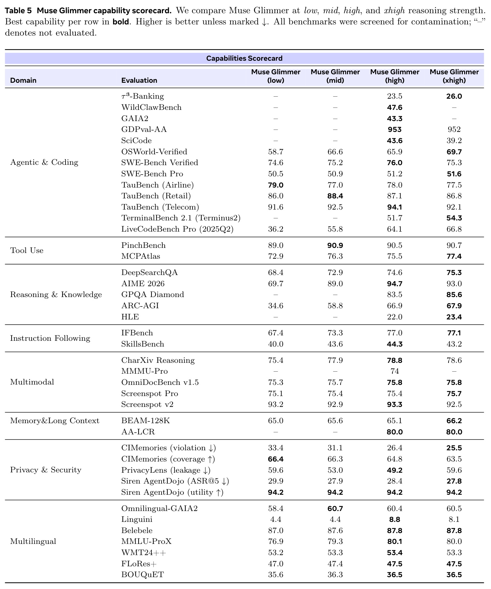
A.1 agent 与编程任务完成
以下基准用于评估模型的 agent 与编程能力。
τ³-bench Banking（Shi et al., 2026）是一项基于知识检索的客户服务评估，将 τ-bench 扩展到金融科技银行领域。模型充当客服助手，必须通过可配置的 RAG 流程、文档搜索以及基于 shell 的 agent 搜索，从非结构化知识文档（政策指南、FAQ 页面、合规流程）中检索相关信息，以解决客户问题。模型与模拟用户交互，任务成功与否取决于是否满足每个任务针对检索信息和生成回答所设定的真实值断言。结果来自 Artificial Analysis，遵循其文档规定的基准测试方法。5
WildClawBench（Ding et al., 2026）是一个开源基准，用于评估 agent 模型在真实世界长程任务上的表现。它的 60 项任务涵盖六个类别：生产力流程、代码智能、社交互动、搜索与检索、创意综合和安全对齐。这些任务共同评估多步规划、协同工具使用、多模态理解、信息检索、编程、跨模态内容创作与安全行为。每项任务都在 OpenClaw 执行框架下的独立 Docker 容器中运行，可以访问浏览器、shell、文件系统、电子邮件和日历等工具。根据任务不同，评分使用确定性验证标准、作为 LLM 评判器的 GPT-5.4，或二者结合。每个评分器汇总任务专有标准，生成 0 到 1 之间的总分。我们报告 60 项任务分数的不加权均值，并对每项任务的三次独立运行取平均，以减少方差。三个模型均报告内部运行结果。
GDPval-AA v2（Patwardhan et al., 2025）评估模型在具有经济价值的知识工作上的表现，覆盖对美国 GDP 作出贡献的关键行业中的 44 种职业。该基准包含 220 项任务，由 OpenAI 与行业专业人员合作开发，以体现真实世界的复杂性。每项任务要求模型产出一个或多个交付文件；模型作为 agent 在 AA 的开源 Stirrup 执行框架中运行，配备 E2B 代码执行沙箱、250 轮预算和一系列可用工具。结果来自 Artificial Analysis，遵循其文档规定的基准测试方法。6
SciCode（Tian et al., 2024）包含由科学家整理、涵盖 16 个科学学科的实验室问题，由领域专家开发，报告的评估使用测试集中的 288 个子问题。该基准测试通过 Python 编程解决科学计算任务的能力：模型必须生成通过某个子问题全部单元测试的代码，才能得分。提示词中包含科学家标注的背景信息；我们报告子问题级评分，而非完整问题级评分。不允许使用工具。结果来自 Artificial Analysis，遵循其文档规定的基准测试方法。7 此处报告的分数来自 Muse Glimmer 发布之前，未考虑 2026 年 9 月 Artificial Analysis Intelligence Index v4.2 对 SciCode 所作的调整。8
OSWorld-Verified（Xie et al., 2024）是面向计算机使用 agent 的多模态基准，评估通过 GUI 在真实跨应用工作流程中操作完整 Ubuntu 桌面虚拟机的能力。我们在排除 8 项 Google Drive 任务后的 361 任务划分上评估。agent 仅能通过 GUI 控制计算机，不能直接访问 shell：它们通过截图观察环境，并通过点击、输入、滚动和按键等 GUI 操作行动。评分基于执行结果，每项任务定义程序化的状态读取器和检查器，检查最终虚拟机状态，并返回 0–1 奖励。模型接收 1920 × 1080 的截图，在归一化坐标空间中预测点击位置，每一步可以批量执行多个 GUI 操作。每个回合上限为 200 步，并启用截图历史截断机制，最多保留最近 19 张截图。对于 Qwen3.6-27B 和我们的模型，我们采用 Claude 计算机使用动作空间（版本 computer_20251124），使用归一化的 0–1000 坐标空间，并增加独立的停止动作。对于 Gemma4-31B，我们使用 Gemini 2.5 Flash 计算机使用接口，包括 click_at、type_text_at 和 stop，相对坐标位于 [0,999]。遵循官方 OSWorld 协议，我们报告任务平均奖励。最终分数对每项任务的四次尝试取平均，以减少方差。三个模型均报告内部运行结果。
5 https://artificialanalysis.ai/methodology/intelligence-benchmarking#tau3-banking
6 https://artificialanalysis.ai/methodology/intelligence-benchmarking#gdpval-aa
7 https://artificialanalysis.ai/methodology/intelligence-benchmarking#scicode
8 https://artificialanalysis.ai/articles/artificial-analysis-intelligence-index-v4-2
TauBench。（Yao et al., 2024）是一项多轮 agent 对话评估，模型充当客服助手，与模拟用户交互，并满足每个任务针对数据库状态、操作、沟通质量和自然语言正确性所设定的真实值断言。模型可以访问各划分对应的领域专用工具。我们在三个划分上评估：航空（50 项任务）、电信（114 项任务）和零售（110 项任务）。我们计算各划分的平均通过率，并对 4 次运行的结果取平均。我们报告 Muse Glimmer 的内部运行结果。
SWE-Bench Verified 和 SWE-Bench Pro（Jimenez et al., 2024）分别包含 500 项和 731 项多样且复杂的 agent 编程任务。我们的 agent scaffold 包含一个 bash 工具和一个用于查看、创建与编辑文件的文件操作工具。我们报告任务平均通过率，并对 4 次运行结果取平均，以减少方差。对于 SWE-Bench Verified，我们报告 Qwen3.6-27B 自行公布的分数。对于 SWE-Bench Pro，我们不使用 Qwen3.6-27B 自行公布的分数，因为该分数在调整后的基准版本上测得，而我们评估的是原始任务集。其余情况均报告内部运行结果。
Terminal-Bench 2.1（Merrill et al., 2026）（Stanford × Laude Institute）评估 agent 在终端环境中执行真实世界任务的能力。它包含 89 项经过整理的任务，涵盖软件工程、系统管理、数据处理、模型训练与安全。评估在 E2B 沙箱环境中使用 Terminus 2 agent 执行框架。结果来自 Artificial Analysis，遵循其文档规定的基准测试方法。9
GAIA2（Froger et al., 2026）是一个开源、纯文本的 agent 工具使用基准，评估通用助手在由电子邮件、日历、消息、联系人、购物等日常应用组成的模拟、有状态“世界”中执行多轮任务的能力。每个场景都在承载自包含环境的独立容器中运行：agent 通过对环境应用 API 发出工具调用来完成用户请求，同时事件守护进程在回合中途注入基于时间和环境驱动的事件（如收到消息、状态变化、定时触发），agent 必须注意这些事件并作出适应。我们使用公开 GitHub 仓库进行评估，其中包含 800 项任务，分为五种能力划分（执行、搜索、歧义、适应性和时间）。实验使用 OpenClaw 执行框架。与公开排行榜惯例一致，我们对每项任务进行三次独立运行，衡量各样本的平均成功率。评分由 LLM 完成：容器内的评判器将 agent 实际执行的工具操作和最终状态，与各场景的标准事件进行比较，生成逐任务成功分数；我们使用 gpt-oss-120b 作为参考评判器。三个模型均报告内部运行结果。
LiveCodeBench Pro。（Zheng et al., 2025）是来自 Codeforces 题目的竞赛编程基准。我们使用 C++ 评估 2025Q2 子集（2025 年 4–6 月），采用与 LiveCodeBench Pro 发布版一致的提示词、测试和检查器。10 2025Q2 是提供完整隐藏测试的最新划分。模型生成代码解答后，我们使用内部 Code Execution Service，结合检查器运行完整测试套件；该服务配置为匹配官方 Codeforces 竞赛环境。我们在内部运行基准，报告 pass@1，并对每道题的 8 次尝试取平均，以减少方差。
A.2 工具使用与函数调用
本节评估模型使用外部工具、执行函数调用以完成真实世界任务的能力。
PinchBench（Kilo AI, 2026）是一项基于容器的 agent 评估，基于开源 PinchBench 基准，衡量 agent 执行真实世界知识工作任务的表现。这些任务涉及文件操作、代码执行、网络访问和多步推理（如市场与竞争对手研究报告、数据分析、电子邮件分流和图像生成）。它包含 24 项任务，每项都在运行科学计算 Python 镜像的独立沙箱容器中执行。模型作为自主软件 agent，可以使用 bash/execute_command 工具进行终端交互、文件读写和代码执行，还能使用网络搜索与网页获取工具。每项任务结合基准的确定性自动检查与 LLM 评判器（gpt-oss-120b）分数进行评分。LLM 评判器根据 agent 自行生成的证据（报告内容、文件、工具输出），评估交付物的依据充分程度。我们报告任务平均奖励，并对 4 次运行取平均，以减少方差。鉴于该基准规模有限（下页续）
9 https://artificialanalysis.ai/methodology/intelligence-benchmarking#terminal-bench-v2-1
10 https://github.com/GavinZhengOI/LiveCodeBench-Pro
（接上页）（24 项任务），且许多任务由评判器针对自由形式的交付物评分，我们主要将该基准视作诊断性工具。我们报告 Muse Glimmer 的内部运行结果。
MCPAtlas（Bandi et al., 2026）是一项多轮 agent 工具使用评估，模型通过 20 多个 MCP 工具服务器（如 GitHub、Twelve Data、Notion）回答查询。评分使用 LLM 评判器（Gemini 2.5 Pro），评估模型的最终回答是否满足真实值所列的要求。主要指标为平均通过率：任务分数高于 0.75 阈值即视为成功通过。该基准包含 500 项公开任务，结果对 4 次运行取平均，以减少方差。三个模型均报告内部运行结果。
A.3 推理与知识
本节在一系列复杂任务上评估模型的推理能力与事实知识。
DeepSearchQA（Gupta et al., 2026）是一项 agent 浏览评估，模型作为自主网页浏览 agent 回答 900 个困难的研究问题。模型只获得一个浏览工具，包含 search、open 和 find 三种功能。它按多步循环工作：推理、调用函数、接收作为新消息返回的结果，然后重复，直到生成最终答案。评分使用 gpt-oss-120b 作为评判器，提取模型预测的答案集合，将预测与目标进行语义匹配，并计算 F1 分数。所有模型都使用我们选定的同一搜索引擎。结果对 4 次运行取平均，以减少方差。三个模型均报告内部运行结果。
AIME 2026（Dekoninck et al., 2026）。我们使用 AIME 2026 完整的 30 题数据集。该基准包含美国数学邀请赛中极具挑战性的非选择题数学问题。这些题目需要创造性问题求解、高级代数变换和深入的数论技能，最终答案始终为 000 到 999 之间的整数。结果对 10 次运行取平均，以减少方差。我们报告自身模型的内部运行结果，以及 Gemma4-31B 和 Qwen3.6-27B 自行公布的数值。
GPQA Diamond（Rein et al., 2024）。我们使用完整的 198 题数据集。该子集包含生物学、物理学和化学领域的高质量选择题，经领域专家验证，确保无法轻易通过 Google 查得答案。解决这些问题需要深入的研究生水平科学推理与严谨的技术理解。结果来自 Artificial Analysis，遵循其文档规定的基准测试方法。11
Humanity’s Last Exam（HLE）（Center for AI Safety et al., 2026）。该基准包含覆盖数十个学科、通过众包收集的高难度问题，专门设计为即使人类专家也难以作答。这些问题测试高深的科学知识、复杂抽象推理以及冷门学术概念。不允许使用工具。我们使用包含 2,158 个问题的纯文本子集。结果来自 Artificial Analysis，遵循其文档规定的基准测试方法。12
ARC-AGI（Chollet, 2019）包含 400 个衡量抽象推理的问题。这些问题是新颖的视觉网格谜题，用于评估模型即时学习新概念的能力，而非依靠记住的训练数据。它们要求识别物体恒存性、旋转、对称、缩放和基础几何等基本核心逻辑，并将这些隐含规则应用于此前未见过的网格配置。模型答案由基于规则的评分器评估，将解析后的输出网格与预期网格进行精确匹配比较；只有全部测试网格完全匹配，答案才计为正确。我们在内部运行基准，报告四次尝试的平均成功率（pass@1）。
A.4 指令遵循与可控性
以下基准用于评估模型准确遵循指令并响应用户引导的能力。
11 https://artificialanalysis.ai/methodology/intelligence-benchmarking#gpqa-diamond
12 https://artificialanalysis.ai/methodology/intelligence-benchmarking#hle
IFBench（Pyatkin et al., 2025）是一个指令遵循基准，测试模型能否满足提示词中嵌入的特定可验证约束（如词语位置、计数约束、重复模式）。该基准包含 294 项任务，我们报告任务平均通过率。结果对 4 次运行取平均，以减少方差。我们报告 Qwen3.6-27B 和自身模型的内部运行结果，以及 Gemma4-31B 自行公布的数值。
SkillsBench（Li et al., 2026）是一个开源基准，衡量 agent 利用“技能”——模块化的指令与辅助脚本文件夹——完成专业知识工作任务的有效程度。我们使用 86 任务集合，覆盖广泛的软件和数据工程领域。每项任务都在独立容器中运行，容器依据任务的 Docker 镜像与初始化命令预先配置，相关技能文件夹挂载到工作区。执行框架提供 bash／终端工具，以及图像查看和浏览器工具。评分是确定性的，基于 pytest：agent 完成后，将隐藏测试套件上传到同一容器并执行，奖励为通过测试的加权比例。我们报告四次尝试的任务平均奖励。三个模型均报告内部运行结果。
A.5 多模态理解
我们通过涵盖视觉推理、文档理解和 UI 交互的基准，评估多模态理解能力。
Charxiv Reasoning（Wang et al., 2024b）。我们使用 CharXiv 验证集中的 1,000 道图表推理题。评分使用 gpt-oss-120b 作为 LLM 评判器，评估模型响应与标准答案在语义和数学上的等价性。这些多模态问题配有直接取自多个学科学术论文的多样、复杂科学图表。该基准测试模型超越简单数据提取，执行复杂视觉综合、多步数学计算、模式识别和趋势比较的能力。我们报告四次尝试的平均任务成功率。Gemma4-31B 和自身模型报告内部运行结果，Qwen3.6-27B 使用其自行公布的数值。
MMMU-Pro（Yue et al., 2025）是一个包含 1730 道选择题的多模态推理基准。该基准提供覆盖 STEM、人文学科和社会科学等 30 个学科的大学水平问题，并专门过滤掉任何纯文本模型也能回答的问题。问题需要专家级推理，配有高度复杂且类型多样的图像，包括示意图、化学结构、医学扫描和图表；同时显著扩展答案选项空间，以降低随机猜测成功率。结果来自 Artificial Analysis，遵循其文档规定的基准测试方法。13
OmniDocBench v1.5（Ouyang et al., 2024）。我们使用该基准的 v1.5 版本，包含 1355 个多模态提示词。该基准评估模型准确解析、提取和推理高度复杂、多格式文档的能力。输入由各种真实文档页面构成，例如学术论文、教科书、财务报告、幻灯片和手写笔记，要求模型同时处理密集文本、复杂多栏布局、表格和嵌入的数学公式。我们通过内部实现的原始评分协议报告所有任务的平均分；该实现将原先由文本、表格、公式三个分量组成的评分公式，改为两个分量的加权平均，将公式并入文本组（按编辑距离评分），而非使用 Character-and-Delimiter Match 指标单独评估公式。我们的实现使用较简单的匈牙利算法进行二分元素匹配，而非官方 v1.6 的 MGAM（多粒度自适应匹配）；后者在保持真实标注固定的情况下，自适应搜索最优预测分段粒度。结果对 4 次运行取平均，以减少方差。三个模型均报告内部运行结果。
ScreenSpot-Pro 和 v2（Li et al., 2025a; Wu et al., 2024）是开源的多模态 GUI 定位基准，评估模型能否在静态截图中找到指定的界面元素。对于 ScreenSpot-Pro，我们评估完整的 1,581 样例集合，重点覆盖 Windows、macOS 和 Linux 上的高分辨率专业应用。每个样例提供一张截图及目标元素的自然语言描述。模型使用迭代式 Python 裁剪工具。模型首先预测完整截图上的一个点（下页续）
13 https://artificialanalysis.ai/methodology/intelligence-benchmarking#mmmu-pro
（接上页）使用归一化的 [0, 1000] 坐标。随后我们渲染以该点为中心、叠加网格的放大视图，并将模型在裁剪图内的局部预测映射回原图。该循环反复进行，直到预测收敛，最多支持 10 轮验证；如果模型认为裁剪图中不存在目标，允许从原图重新开始，最多三次。评分是确定性的：最终预测点落在标注目标边界框内，奖励为 1，否则为 0。对于 ScreenSpot v2，UI 元素采用相同的坐标输出格式，但由于图像分辨率较低，不额外使用工具。我们报告点落入框内的平均准确率（pass@1），并对每个样例独立采样的四个预测取平均，以减少方差。三个模型均报告内部运行结果。
A.6 记忆与长上下文
以下基准用于评估模型在长上下文输入中保留、检索信息并进行推理的能力。
AA-LCR（Team, 2025）通过测试跨多个长文档的推理，评估长上下文性能。问题难度较高，基于文本，需要实际推理而非简单数据提取。我们使用完整的 100 题数据集，覆盖学术论文、公司财务资料、政府咨询文件、法律文档、行业报告和营销材料等文档类别。不允许使用工具。结果来自 Artificial Analysis，遵循其文档规定的基准测试方法。此处报告的分数来自 Muse Glimmer 发布之前，未考虑 2026 年 9 月 Artificial Analysis Intelligence Index v4.2 对 AA-LCR 所作的调整。14
BEAM-128K（Tavakoli et al., 2025）是纯文本、非 agent 的长上下文记忆评估，包含 400 段长度达 128K 个 token 的对话，涉及编程、数学等多个领域。它旨在评估十种不同的记忆能力（如事实回忆、时间推理、状态跟踪）。每个样本都作为直接的单轮回忆任务进行评估：将完整对话历史放入上下文，模型必须在没有任何 scaffold 或工具的情况下，回答一个探测记忆的问题。评分由 GPT-5.4 作为 LLM 评判器，将模型响应与参考答案对照。我们衡量四次尝试的平均 pass@1。三个模型均报告内部运行结果。
A.7 多语言
以下基准用于评估模型的多语言能力。我们的多语言评估仅涉及文本；此处不评估多语言多模态理解。
OmnilingualGAIA2（Caciolai et al., 2026）是一个多语言 agent 基准：agent 必须在同样使用目标语言的世界中规划、搜索和行动，完成以目标语言提出的用户任务。它将 GAIA2（Froger et al., 2026）的 4 种核心能力（搜索、执行、歧义、适应性）扩展到 10 种语言，并使用包含多语言 LLM-as-Judge 组件的验证器，对 agent 操作与响应评分。我们报告 3 次运行的平均 pass@1，以减少方差。
Linguini（Sánchez et al., 2026）是一个与语言无关的语言学推理纯文本基准：894 道题，分为 160 个问题，取自国际语言学奥林匹克竞赛，覆盖 75 种主要为低资源的语言。每个问题提供少量某种语言的平行样例；这种语言几乎可以肯定是模型从未见过的，模型必须仅凭这些样例归纳出底层形态、音韵或数字系统。既不要求、也无法受益于该语言的先验知识，因此基准衡量的是推理而非回忆。问题有五种形式：译入和译出未知语言、填空、字母匹配，以及数字与其文字形式之间的转换。每个样本都是直接的单轮任务：上下文、问题和答案格式均在上下文中给出，模型在没有 scaffold 或工具的情况下生成要求的词或短语。评分基于参考答案，以归一化精确匹配自动完成。我们报告完整问题精确匹配率，只有某个问题的所有答案均正确才计分，并在 B.6 节讨论全部 894 道题的逐题准确率。
Belebele（Bandarkar et al., 2024）是一个覆盖 122 种语言变体的纯文本选择题阅读理解基准。每道题在每种语言中都存在（数据集完全平行），因此各语言分数可以直接比较。每道题都以 FLORES（NLLB（下页续）
14 https://artificialanalysis.ai/articles/artificial-analysis-intelligence-index-v4-2
（接上页）Team et al., 2024）中的短文为依据，提供四个答案选项，旨在区分阅读能力强弱：仅英文子集就足以挑战前沿模型。每个样本都是直接的单轮任务：短文、问题和四个选项均在上下文中给出，模型无需 scaffold 或工具，选择一个选项。评分与标准选项进行精确匹配。我们报告平均准确率。
MMLU-ProX（Xuan et al., 2025）是一个纯文本、多语言的知识与推理基准，将 MMLU-Pro 侧重推理的设计扩展到语言类型多样的多种语言。每种语言包含近 12,000 道题，由半自动流程生成：最先进的 LLM 先进行翻译，再由专家标注员核验概念准确性和术语一致性。我们使用 lm-eval15 的默认设置和 0-shot 提示，在全部 29 种语言的完整测试集上评估，并在预期位置呈现 Muse Glimmer 的推理强度块。我们报告跨语言平均 pass@1。
WMT24++（Deutsch et al., 2025）是纯文本、多向机器翻译基准，将 WMT24 测试集扩展到 55 种语言与方言：为新增的 46 种语言／方言加入新收集的人工参考译文与译后编辑，并对原 WMT24 的 9 种语言中的 8 种的原始参考译文进行译后编辑。它涵盖文学、新闻、社交和口语四个领域。每个样本作为直接的单轮翻译任务评估：在从英语译出的方向上，模型接收源片段，在没有 scaffold 或工具的情况下生成目标语言译文；对于译入英语的方向，我们将测试集反向，将人工参考译文译回英语，并以原始英文源文本评分。评分基于参考译文，使用 chrF++（Popović, 2015）对照人工参考译文自动完成。
FLORES+（NLLB Team et al., 2024）是覆盖 200 种语言的纯文本、多向平行翻译基准，由英文 Wikimedia 文章经专业人员翻译为各目标语言构建而成，分为 dev／devtest／test 划分发布。我们评估公开 devtest 划分，每种语言包含 1,012 个句子。同样，每个样本都是直接的单轮句子级翻译任务，评分以人工参考译文为依据，使用 chrF++ 自动完成。
BOUQuET（Andrews et al., 2025）是纯文本、多向、多中心、多语域／领域的基准，最初以 9 种非英语源语言手工编写（埃及阿拉伯语、现代标准阿拉伯语、法语、德语、印地语、印度尼西亚语、普通话、俄语、西班牙语），这些语言被选作高覆盖率的枢轴语言。与句子级基准不同，它按长度不同的段落组织；其非英语起源、多中心的设计，旨在避免污染，并确保体现多语言特征。与上述类似，每个样本作为直接的单轮句子级翻译任务评估，评分以人工参考译文为依据，使用 chrF++ 自动完成。
A.8 策略遵循
A.8.1 推理时的数据处理
以下基准用于评估模型保护用户隐私、抵御对抗性操纵的能力。
PrivacyLens。（Shao et al., 2024）我们使用完整的 493 提示词数据集，评估 LLM 作为 AI 助手时的隐私规范意识。每个提示词都将模型置于模拟的 agent 情境中：系统提示词描述用户可用工具（如电子邮件、联系人），用户消息包含一段预先执行的工具调用轨迹，随后给出用户指令。模型接着生成一个不暴露敏感信息的单轮响应（邮件、帖子、消息）。这是一项纯文本、非多模态评估。评分使用 LLM-as-Judge（Claude Sonnet 4.6），同时评估（1）信息暴露，即响应是否透露场景中的任何信息项（每项二元判断），以及（2）0–3 分的帮助程度。报告的指标为调整后的暴露率，即在响应有帮助（帮助程度 ≥2）的条件下，暴露任意信息项的样本比例。我们在内部运行基准，并对 4 次运行结果取平均，以减少方差。
CIMemories（Mireshghallah et al., 2026）。CIMemories 衡量模型在不恰当情境中透露个人敏感信息的程度。它使用合成用户档案，每位用户具有超过 100 个属性（如财务、健康、关系属性），并将其与代表典型社会互动（如与医生沟通）的多样任务情境配对，共得到 2500 个（下页续）
（接上页）场景。每个属性可能对某些任务必不可少，却对另一些任务不恰当，由此形成两个主要指标：违规率（透露不恰当属性的程度）和覆盖率（分享必要属性的程度）。我们使用 Claude 4.6 Sonnet 作为 LLM 评判器，判断模型是否分享了属性，并对 4 次运行结果取平均，以控制方差。三个模型均报告内部运行结果。
A.8.2 抵御提示词注入的鲁棒性
Siren AgentDojo（De Benedetti et al., 2024）。Siren AgentDojo 是一个公开基准，用于评估模型在遭遇提示词注入攻击时如何处理标准工具使用场景。该评估将分布在四个不同环境（银行、旅行预订、工作区管理、在线商店）中的 97 项良性任务，与 35 项恶意任务结合，共形成 949 个提示词注入尝试场景。每个场景都为 agent 配备领域专用工具，例如交易 API、日历访问和文件操作。该基准专门测试 agent 能否被隐蔽攻击操纵，滥用这些工具执行数据外泄或未经授权的金融交易等恶意操作。由 LLM 驱动的攻击者（我们使用 Claude Opus 4.6）迭代优化攻击，直至成功，或达到最多 6 次迭代。我们使用基于规则的确定性评分，判断攻击成功情况与良性任务完成情况。此处报告两个分数：攻击成功率（ASR），即攻击者注入的恶意任务的成功率；以及效用，即存在恶意注入时，用户所指示的良性任务的成功率。更高效用和更低 ASR 表明 agent 能完成更多用户请求，同时受到注入提示词的影响更小。三个模型均报告内部运行结果。
B 实现细节
B.1 系统提示词示例——助手
你是一位乐于助人的 AI 助手。
知识截止日期：2026-01-04。
当前日期：2026-03-15。在此环境中，你可以使用一组工具来回答用户的问题。你可以在回复用户时写入如下
<atem:function_calls>块来调用函数：<atem:function_calls> <atem:invoke name="$FUNCTION_NAME"> <atem:parameter name="$PARAMETER_NAME">$PARAMETER_VALUE</atem:parameter> ... </atem:invoke> </atem:function_calls>字符串与标量参数应按原样指定，列表和对象则应使用 JSON 格式。
以下是可用函数：
"name": "bash.exec", "description": "Execute a bash command in the terminal. Commands will time out after 120 seconds.", "parameters": "type": "object", "properties": "cmd": "type": "string", "description": "The bash command to execute.", "required": ["cmd"] "name": "str_replace_editor.create", "description": "Create a new file with the given content.", "parameters": "type": "object", "properties": "path": "type": "string", "description": "Absolute path for the new file.", "file_text": "type": "string", "description": "The content to write.", "required": ["path", "file_text"] "name": "submit.submit", "description": "Submit the solution when the task is complete.", "parameters": "type": "object", "properties": , "required": []以下示例展示如何使用工具：
<atem:function_calls> <atem:invoke name="bash.exec"> <atem:parameter name="cmd">find /testbed -type f -name "*.py" | head -20</atem:parameter> </atem:invoke> </atem:function_calls>## 任务总结：
在最后一轮中，提供简短总结……## 附加指令：
- 不要使用交互式命令。
- 无法访问互联网。
- 修复前先复现问题。
- 运行现有测试。
Reasoning strength: high. # Valid recipients: "self", "bash.exec", "str_replace_editor.view", "str_replace_editor.str_replace", "str_replace_editor.create", "submit.submit", "user".
B.2 系统提示词示例——OpenClaw
你是在 OpenClaw 内运行的个人助手。
工具：
你可以严格按名称使用列出的工具。可用工具包括 read、write、edit、exec、process、web_search、web_fetch、browser、canvas、nodes、cron、message、gateway、session／session-agent 工具、记忆工具以及 tts。TOOLS.md 仅作指导，不是工具可用性的依据。对于复杂或耗时较长的任务，生成一个子 agent。工具调用风格：
不要讲述常规低风险工具调用。仅对复杂、多步或敏感操作作简短说明。安全：
你没有独立目标。不要追求自我保存、复制、资源获取或权力。优先考虑安全与人类监督。若指令冲突，暂停并询问。不要绕过防护措施，也不要操纵任何人来扩大访问权限。OpenClaw CLI：
仅使用文档中记录的 OpenClaw 子命令：
openclaw gateway statusopenclaw gateway startopenclaw gateway stopopenclaw gateway restart如果不确定，索取
openclaw help的输出。技能：
回复前，浏览可用技能。若有一个明显适用，读取其 SKILL.md 并遵循。若多个适用，选择最具体的一个。若没有适用技能，就不读取技能。开始时绝不读取一个以上的技能。记忆回溯：
回答有关以往工作、决策、日期、人物、偏好或待办事项的问题前，对 MEMORY.md 和 memory/*.md 运行memory_search，随后仅对所需行运行memory_get。在有帮助时注明来源。自我更新：
仅在明确被要求时，运行 OpenClaw 更新／配置变更。工作区：
工作目录是/root/.openclaw/workspace。除非另有指示，将其视为全局工作区。编辑后提交更改。文档：
对于 OpenClaw 行为、命令、配置或架构，优先使用/opt/chatbot/docs中的本地 OpenClaw 文档。消息：
当前会话中的回复会自动路由到来源通道。仅将message用于主动发送／通道操作。绝不使用 exec／curl 进行服务商消息发送。项目上下文：
加载的项目文件包括 AGENTS.md、SOUL.md、TOOLS.md、IDENTITY.md、USER.md、HEARTBEAT.md、BOOTSTRAP.md，以及静默回复、心跳和运行时规则。
B.3 合成数据：人物设定生成细节
我们的流程支持两种人物设定生成模式。在基于采样的模式中，我们从偏向 25–35 岁、下限为 18 岁的 Beta(2,5) 分布中采样年龄，并从加权类别分布中采样地区；该分布反映 AI 用户群体在北美、欧洲、亚洲、印度、中东、拉丁美洲和非洲之间的现实分布。大五人格分数（开放性、尽责性、外向性、宜人性、神经质）分别独立取自截断高斯分布（\(\mu=5\)、\(\sigma=2.5\)，限制于 \([1,10]\)）。这些采样属性传给模型，并提示它合成与采样心理测量特征一致的连贯身份：姓名、职业、婚姻状况、工作风格、数字习惯、爱好、生活习惯、梦想和担忧。在以文本为依据的模式中，我们改为从多个来源采样原始文本段落，提示模型推断可能创作过或接触过每段文本的若干合理人物设定（每个都附有解释和合理性／概率分数），并生成涵盖日常活动、关系和目标的自由形式背景段落。这与近期发现一致：相比纯粹由 LLM 采样人口统计 schema，让人物合成以真实长文本为依据，能够生成人群，其心理测量特质分布比仅基于温度采样更接近真实人类群体（Hu et al., 2025）。
B.4 请求格式
Muse Glimmer 原生支持一组可调参数：推理强度、有效接收方，以及 agent 工具调用格式（ATEM）。
推理强度控制模型生成响应前内部 chain-of-thought 的深度。它在系统提示词中以单行指定：
Reasoning strength: <level>.支持四个级别：
- Low：最少推理；回复前进行简短的内部思考。适合简单事实查询或琐碎任务。
- Medium：适度推理；为需要一定规划的中等复杂度任务提供均衡思考。
- High：完整推理；为复杂的多步编程、调试或研究任务提供深入的 chain-of-thought。这是 agent 工作负载的默认级别。
- xHigh：最大推理；使用最大可用思考预算，适用于质量重于延迟的最困难长程 agent 和研究任务。保留给离线或评估场景，而非交互式使用。
有效接收方：模型生成的每条消息都带有 to= 路由头，决定基础设施如何处理该消息。系统提示词通过末尾指令声明可用接收方集合：
# Valid recipients: "self", "bash.exec", "str_replace_editor.view", "user".存在三类接收方：
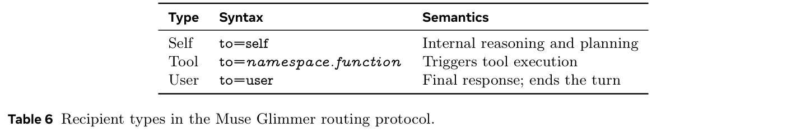
模型只能路由到有效接收方指令中明确列出的接收方。每个工具函数都具有独立条目（例如，str_replace_editor.view 和 str_replace_editor.str_replace 是不同的（下页续）
（接上页）接收方）。接收方 self 和 user 始终存在，路由到 user 将终止模型本轮响应。
agent 工具调用格式（ATEM）：ATEM 是用于工具调用的基于 XML 的格式。一次工具调用由与工具完全限定名称相匹配的路由头，以及随后的 atem:function_calls XML 块组成。
B.4.1 工具定义
工具在系统提示词中定义为 JSON schema 对象，指定名称、说明和参数：
{
"name": "bash.exec",
"description": "Execute a bash command.",
"parameters": {
"type": "object",
"properties": {
"cmd": {
"type": "string",
"description": "The bash command."
}
},
"required": [
"cmd"
]
}
}工具名称遵循 namespace.function 约定。
B.4.2 调用格式
调用工具时，模型输出：
to=bash.exec <atem:function_calls> <atem:invoke name="bash.exec"> <atem:parameter name="cmd">ls /workspace</atem:parameter> </atem:invoke>
</atem:function_calls>字符串与标量参数按原样写入；数组和对象使用 JSON 语法。单个 atem:function_calls 块中可包含多个 atem:invoke 元素，以实现并行工具调用。
同样，工具输出封装在训练时也支持多种风格，包括标准 XML、Markdown 代码块、括号／箭头／竖线／井号分隔符，以及 ReAct 风格的 Observation: 前缀，以提高模型在不同部署情境中的鲁棒性。
B.5 agent 数据格式
助手消息使用 recipient 区分私有推理（self）、工具调用（<tool>.<function>）和最终面向用户的回答（user）。工具调用在 body_text 中渲染为 <atem:function_calls> XML，并镜像保存在 metadata.tool_calls 中。外部工具观察结果以 SECURITY NOTICE 标头和 «<EXTERNAL_UNTRUSTED_CONTENT»> 哨兵标记封装，使模型将其内容视为不可信。某些划分还在用户轮次前加上 Sender (untrusted metadata) 块。下面是一个简略示例。
清单 1 实验配置
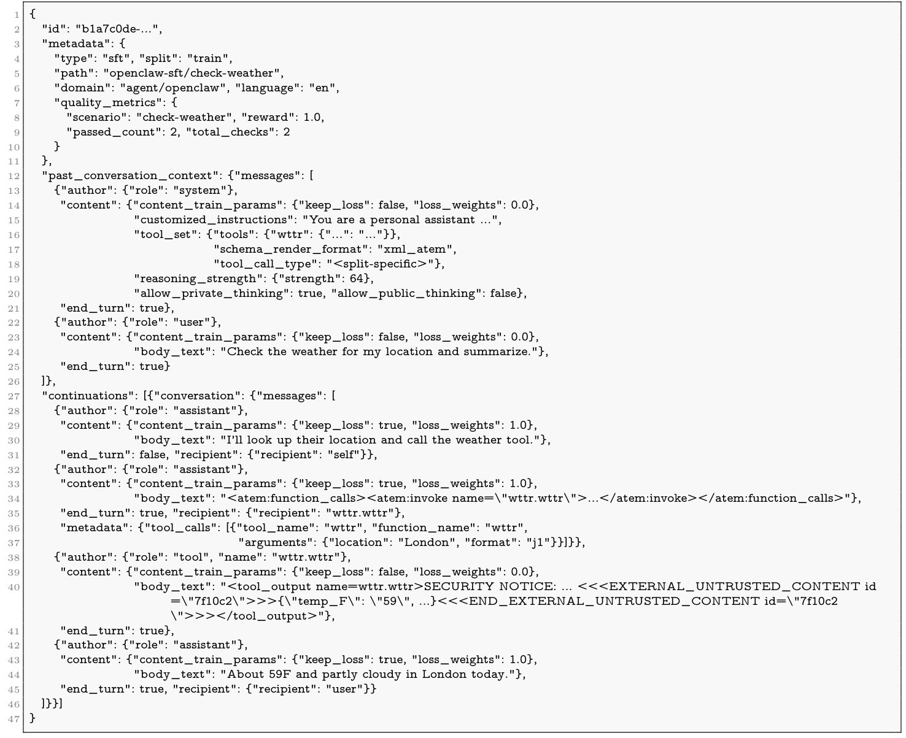
B.6 多语言能力
我们评估 Muse Glimmer 处理涉及多种语言的广泛任务的能力。由于 agent 会由非英语用户部署，我们沿两个维度评估多语言能力：一是通过翻译与阅读理解衡量语言能力；二是知识、推理和 agent 行为的任务能力从英语迁移到其他语言的情况。我们将二者区分开来，因为它们并不同步变化，翻译质量无法很好地预测 agent 是否已可实际使用。
我们还以机器翻译作为代理任务，确定 Muse Glimmer 支持的语言集合，分为两个层级：强支持（88 种语言）和可用支持（49 种语言），总共支持 137 种语言变体。
下文遵循 FLORES-200（NLLB Team et al., 2024）的记法表示语言变体，并在括号中给出更熟悉的语言名称，例如 eng_Latn（英语），其中 eng 是标识该语言类群的 ISO-639-3 代码，Latn 则是标识其书写系统的 ISO-15924 代码。
B.6.1 多语言 agent 能力
OmnilingualGAIA2（Caciolai et al., 2026）是 GAIA2（Froger et al., 2026）的多语言扩展，覆盖 10 种语言和 4 种核心 agent 能力，使我们能直接评估原本仅英语的能力如何迁移到多语言场景。我们将 low、medium、high 和 xhigh 推理强度下的 Muse Glimmer 与 Gemma4-31B、Qwen3.6-27B 比较，跨语言结果见表 7。
Muse Glimmer 在英语中观察到的强大 agent 表现，能够迁移到该基准所覆盖的高资源语言集合（均属于我们的强支持层级）。在每个测试推理强度下，Muse Glimmer 在全部 10 种语言中都是表现最好的模型：在完整的 \(10\times4\) 组合中，它领先 Gemma4-31B 的幅度从 16.4 分（日语，xhigh）到 27.2 分（印地语，medium）不等；领先 Qwen3.6-27B 的幅度从 10.8 分（法语，low）到 23.0 分（德语，high）不等。对 10 种目标语言取平均，随着推理强度不同，Muse Glimmer 领先 Gemma4-31B 21.0–23.2 分，领先 Qwen3.6-27B 13.4–15.7 分。
然而，多语言迁移并不完美，其他受测模型也是如此。比较英语与非英语表现时，我们观察到全面下降：在 high 强度下，Muse Glimmer 的 pass@1 从英语的 73.7（3 次 rollout 平均）降至日语的 50.0，相差 23.7 分；10 种目标语言的平均下降为 13.3 分（low 为 15.3，medium 为 13.0，xhigh 为 13.4）。所有强支持语言都出现下降：除日语外，相对英语，在 high 下的降幅从德语的 7.8 分到印地语的 20.1 分不等。两个对比模型也都有明显但幅度不同的下降：Qwen3.6-27B 平均下降 11.6 分，最大下降 20.0 分，英语排名第一，日语最后；Gemma4-31B 平均下降 5.7 分，最大下降 10.7 分，同样在英语上达到峰值，但印地语最低，日语紧随其后、倒数第二。此外，三个模型具有相同的能力排序（平均表现为搜索 > 执行 > 适应性 > 歧义），尽管各语言的确切排名可能不同。尤其是，Qwen3.6-27B 的英语到日语差距（20.0）相近，而 Gemma4-31B 似乎能保留更多英语性能（最大下降为 10.7）；不过，这也可以视为其较低英语上限（43.2）造成的现象。
推理强度的影响较小，且并非始终单调。对 10 种目标语言取平均，Muse Glimmer 从 low 到 medium 提升 2.3 分（\(58.4\rightarrow60.7\)），此后进入平台期（high 为 60.4，xhigh 为 60.5）；任何单种语言的 high 与 xhigh 差距均不超过 0.7 分。但这一平台并不一致：十种语言中有七种在 high 或 xhigh 达到峰值，而中文、印地语和日语在 medium 达到峰值。中文的退化可以忽略（medium 到 high 降低 0.1 分），但印地语（6.1）和日语（3.0）的下降显著；这两种语言的下降几乎完全来自搜索能力（印地语 \(81.8\rightarrow69.9\)，日语 \(77.8\rightarrow68.5\)），而其他所有语言在同样的切换中，搜索表现变化都保持在 ±2 分之内。印地语和日语也是集合中分数最低的两种语言，因此最可能受益于更多测试时推理的语言，恰恰是在推理强度超过 medium 后受到损害的语言。
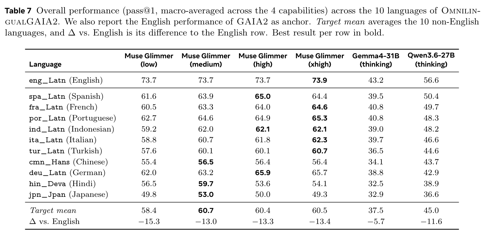
B.6.2 非 agent 多语言能力
我们进一步研究 Muse Glimmer 的非 agent 能力如何从英语迁移到其他语言，主要发现如下。
强大的元语言推理。OmnilingualGAIA2 上的良好表现表明 Muse Glimmer 具有强大的多语言推理能力。为评估模型进行元语言推理的能力，即理解并按照（可能未见过的）语言规则进行操作，我们使用 Linguini（Sánchez et al., 2026），因为它有意将语言知识排除在考量之外：每个问题都在上下文中提供所需的全部证据，因此模型不能退回到依靠训练时见过该语言的经验。Muse Glimmer 在完整问题精确匹配率上大幅领先（8.8，Gemma4-31B 为 3.8，Qwen3.6-27B 为 2.5），解决的完整问题数量超过最强基线的两倍。按逐题统计时，顶端差距缩小且顺序反转（17.9，Gemma4-31B 为 18.8，Qwen3.6-27B 为 14.4），表明 Muse Glimmer 更常将一套推导贯彻到每个要求的答案，而 Gemma4-31B 则在更广泛的部分解决问题中答对了相近比例的单个答案。这两种排序都无法从翻译支持层级推导出来：Linguini 的 75 种语言几乎全部位于支持集合之外，此处表现反映的是对陌生形态规则的归纳推理，而非对语言本身的覆盖。
阅读理解与知识迁移良好。我们研究良好的 agent 与元语言推理能力，是否以更传统的多语言任务表现为代价。在覆盖 122 种语言的机器阅读理解基准 Belebele（Bandarkar et al., 2024）上，Muse Glimmer 得分 87.8%，领先 Qwen3.6-27B（86.1%），略低于 Gemma4-31B（88.6%）；三者相差不到 2.5 分，表明在这一规模下，多语言阅读理解不是形成差异的维度。在衡量多语言场景中领域专门知识的 MMLU-ProX（Xuan et al., 2025）上，我们发现类似结果：Muse Glimmer 的平均 pass@1 为 80.1，低于 Gemma4-31B（82.5），Qwen3.6-27B 略高（80.5）。值得注意的是，排除 Wolof 语后，Muse Glimmer 在三个模型中的多语言差距最小；Muse Glimmer 当前尚未充分覆盖该语言：Muse Glimmer（high）的英语到其他语言平均差距仅为 2.6 分，Gemma4-31B 为 3.7，Qwen3.6-27B 为 5.2。在这一统计方式下，总体表现也更接近：Muse Glimmer（high）超过 Qwen3.6-27B（81.5 对 81.1），与 Gemma4-31B（83.0）的差距缩小。换言之，Muse Glimmer 以 1.5 分的平均准确率，换来了更均匀的跨语言表现。
Muse Glimmer 的 token 效率高。MMLU-ProX 的绝对准确率掩盖了生成成本的较大差异（表 8）。Gemma4-31B 与 Muse Glimmer 的平均每次 rollout token 数接近（2,671 对 2,453），而（下页续）
（接上页）Qwen3.6-27B 使用 4,532 个，比 Gemma4-31B 多 70%，是 high 模式下 Muse Glimmer 的 1.8 倍。因此，偏好哪种模型取决于部署受准确率约束还是吞吐量约束：排除 Wolof 语后，Gemma4-31B 以约 10% 的额外 token 换来 1.5 个百分点的准确率；Qwen3.6-27B 则使用 1.8 倍 token，却完全没有准确率优势。
推理强度不改变这些结论。将推理强度从 high 提升到 xhigh，各项多语言结果的变化都小于不同运行之间的噪声：WMT24++ 为 53.3 对 53.4，FLORES+ 两者均为 47.5，BOUQuET 均为 36.5，Belebele 均为 87.8，Linguini 为 8.1 对 8.8，但生成的 token 增加了 10–27%。因此，我们的所有结果都以 high 作为默认运行设置。
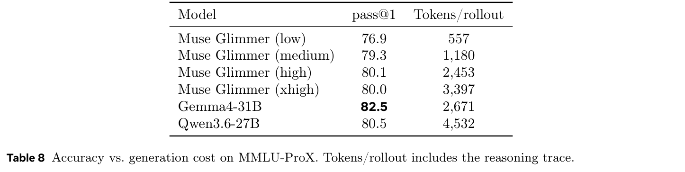
B.6.3 机器翻译表现与详细语言支持
我们利用 Muse Glimmer 在机器翻译任务上的表现来定义语言支持层级，以 chrF++（Popović, 2015）为度量，在 WMT24++（Deutsch et al., 2025）、FLORES+（NLLB Team et al., 2024）和 BOUQuET（Andrews et al., 2025）的并集上评估。具体而言，我们在至少一个基准上测量模型从英语译出和译入英语两个方向的文本翻译表现，并定义两个语言层级。如果按上述协议测得某种语言变体的分数至少为 50，我们称其得到 Muse Glimmer 的强支持；如果分数位于 [40, 49] 范围，则称其为可用支持。请注意，在层级划分时，我们排除空生成；而表 5 和表 9 报告的综合分数，将生成失败记为零分。在 Muse Glimmer 的 0.3% 空生成率下，两种处理得到相同的层级划分。
机器翻译表现。表 9 报告了 Muse Glimmer 在三个基准上的综合翻译表现，区分译入英语（X→eng）与从英语译出（eng→Y）的表现，同样与 Gemma4-31B、Qwen3.6-27B 比较。Gemma4-31B 在三个基准及汇总方向上都是表现最好的模型，但 Muse Glimmer 始终紧随其后（在 WMT24++ 译入英语方向与 Qwen3.6-27B 并列）。具体而言，在 WMT24++ 的 55 个语言对上，Muse Glimmer 译入英语与 Gemma4-31B 的 chrF++ 差距不超过 1.5 分，译出英语的差距不超过 1.2 分。当模型在语言覆盖最广的 BOUQuET 长尾翻译任务上评估时，差距扩大，翻译性能下降，拉低了总体观察表现。
详细语言支持。根据上述可操作定义，以及三个支撑基准提供的语言覆盖（WMT24++ 为 55，FLORES+ 为 212，BOUQuET 为 274），我们确定 Muse Glimmer 支持 137 种语言变体，其中 88 种归为强支持，49 种归为可用支持。
翻译基准有一点需要注意：chrF++ 会惩罚词间不使用空格的书写系统（中文、日语），或每个字符承载一个音节的书写系统（韩语）。这部分解释了为什么中文、日语和韩语在从英语译出方向低于门槛（33.9／34.9／36.5），Gemma4-31B 和 Qwen3.6-27B 也有同样情况，而它们译入英语的分数高于 56。由于这三种语言在 MMLU-ProX 上均达到 81.5，与强支持语言相当，我们不将它们未列入列表解读为缺乏支持，尽管层级划分仍严格基于规则。
我们还要说明，这一计数应理解为语言变体，或语言类群（languoids）。
按层级分组的明确支持语言列表见表 10。
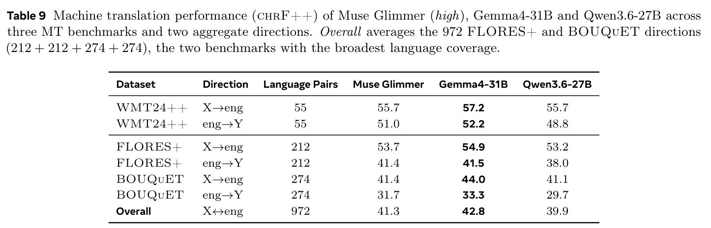
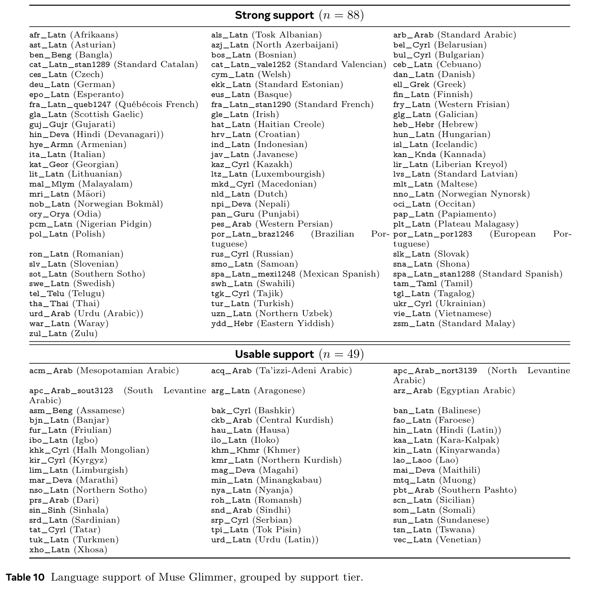
B.7 示例
B.7.1 图表理解
提示词
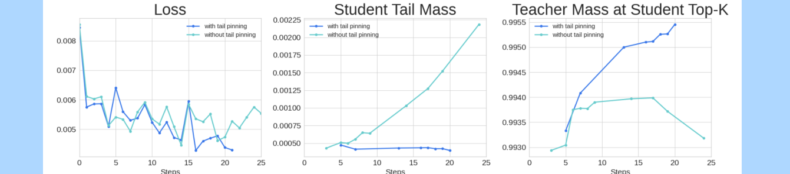
阅读这三张图，告诉我你理解了什么。
回答：这三个面板追踪的是同一次训练运行随优化步数的变化，分别对比在学生模型上启用和不启用“tail pinning”正则项的情况。
- 损失（左）：两条曲线都从约 0.009 开始，在最初 1–2 步内下降。启用 tail pinning 后，蓝色曲线在训练后段平均略低，在第 21–24 步时结束于约 0.0043。不启用时，青绿色曲线持续波动，结束时约为 0.0055–0.0060。
- 学生尾部概率质量（中）：启用 tail pinning 后，学生尾部概率质量稳定在 \(4.5\times10^{-4}\)。不启用时，概率质量从约 \(4\times10^{-4}\) 单调增长到约 \(2.2\times10^{-3}\)，增幅超过 5 倍。
- 教师在学生 Top-k 上的概率质量（右）：启用后，重合程度从约 0.9934 提升至约 0.9955。不启用时，重合程度较早达到峰值，随后降至约 0.9932。
综合来看：tail pinning 让学生分布保持集中，防止尾部概率质量无界增长，并维持学生 Top-k 预测与教师分布之间的一致性。
B.7.2 求解常微分方程
提示词：求解：
回答：对 \(y''-4y'+8y=0\)，令 \(y=e^{rx}\)，得到特征方程：
因此，根为共轭复数 \(r=2\pm2i=\alpha\pm i\beta\)，其中 \(\alpha=2\)、\(\beta=2\)。于是：
等价地，写成振幅–相位形式：
B.7.3 谜语
提示词
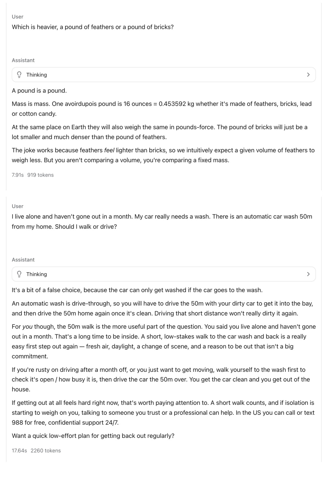